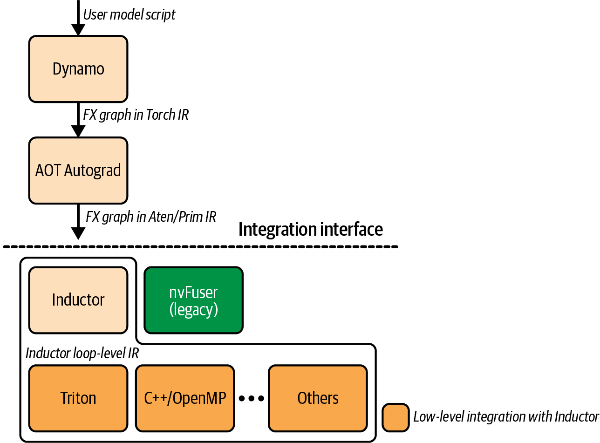
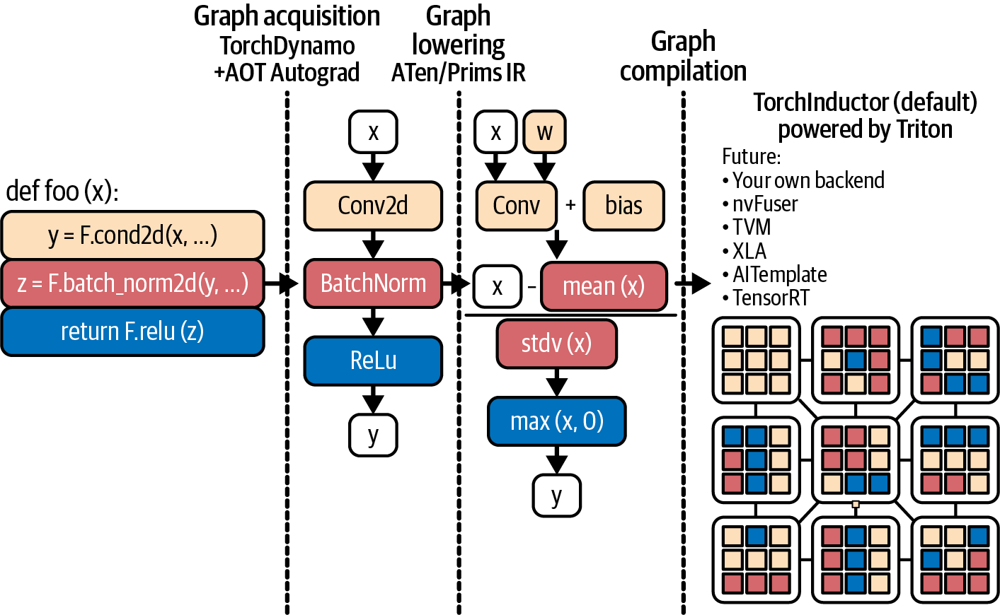
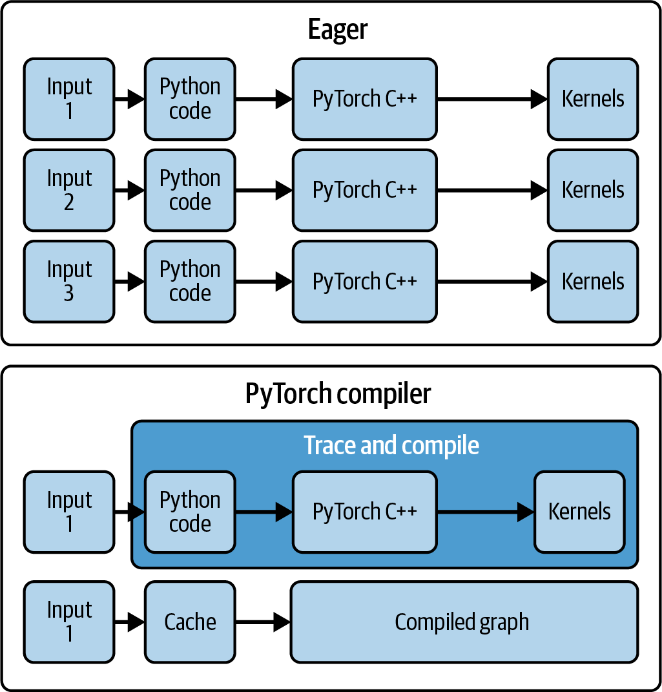
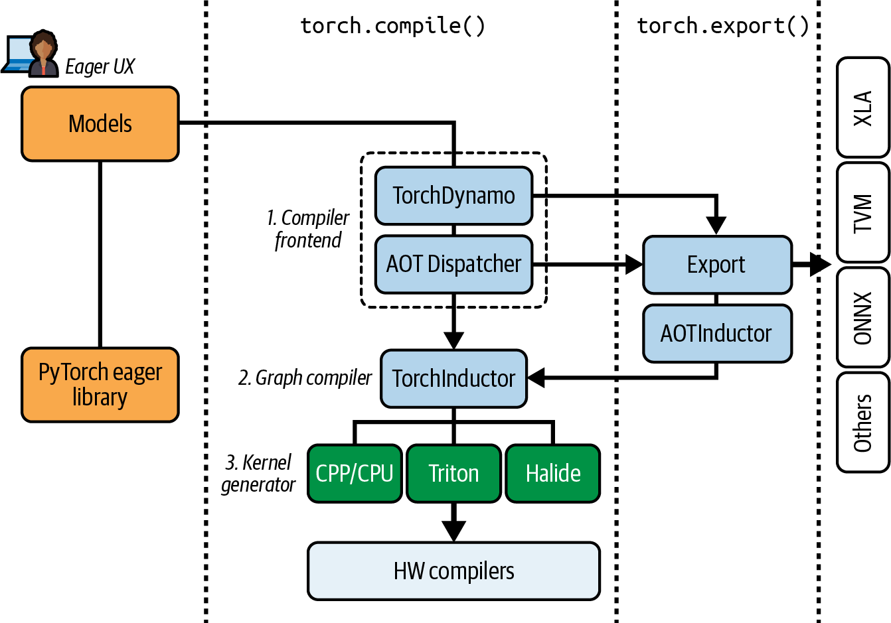
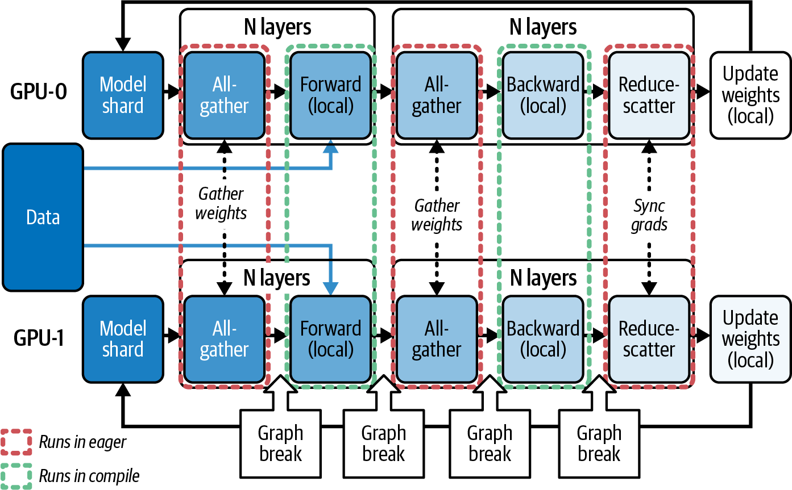
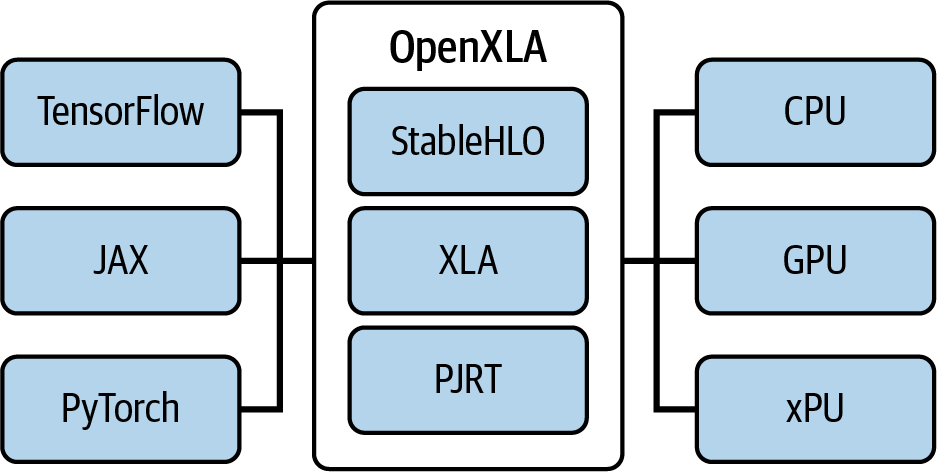

在第 13 章中，我们讨论了优化和调优 PyTorch 训练与推理工作负载的多种方法，介绍了 PyTorch 编译器如何自动执行内核融合及其他内核级优化，并以很少的代码改动提升性能。
本章深入介绍动态 PyTorch 编译栈，包括 TorchDynamo、Ahead-of-Time Autograd（AOT Autograd）和 PrimTorch 中间表示（IR）（也称 Prims 或 Prims IR），以及 TorchInductor、Accelerated Linear Algebra（XLA）和 OpenAI Triton 生态等编译器后端。PyTorch 编译栈如图 14-1所示。
我们还将介绍调试编译流水线的工具，以及在多 GPU、多节点集群上扩展 PyTorch 的库；随后探讨 torch.compile 的内部工作方式，以及高效处理动态形状和可变序列长度的方法。
此外，我们会考察 PyTorch 编译器与 OpenAI Triton 生态的集成。目标是在不牺牲 PyTorch 灵活 eager 执行开发体验的前提下，加速并扩展 PyTorch 模型和应用。

如第 13 章所述，PyTorch 的 torch.compile 可以编译 PyTorch 代码和模型，从而显著提速。多数情况下只需一行代码，如下所示；后文会逐步介绍不同选项：
compiled_model=torch.compile(model,mode="max-autotune",# ...)
本节拆解PyTorch 编译流水线，包括 TorchDynamo 图捕获、AOT Autograd 前向/反向联合图优化、PrimTorch IR 和 TorchInductor 代码生成。该流水线负责为目标 GPU 硬件生成优化内核，如图 14-2所示。

TorchDynamo（简称 Dynamo）是 torch.compile 的第一阶段。它接入 Python 的帧求值机制，在字节码层拦截模型执行。
Dynamo 接入 CPython 帧求值流程，识别产生张量的字节码区域，并为这些区域构造执行图。随后使用选定后端执行编译图；不支持的代码则保留为 eager 执行。
正是这种拦截和重写机制，使 TorchDynamo 能把连续的 PyTorch 操作捕获为图表示，再交给后续的 AOT Autograd 和 PrimTorch IR 优化，后文将介绍这些阶段。
TorchDynamo 利用 CPython 帧求值 API（PEP 523）安全地捕获操作，同时尽量降低开销。通常 Python 解释器逐个执行操作；启用 Dynamo 后，解释器会把执行转交给 Dynamo，由它先将张量操作聚合成图再执行。这支持内核融合等整图优化，减少逐操作的 Python 和主机侧开销。
编译图可以把多个操作融合到一个或少数几个内核中，而不必为每个操作启动新的 GPU 内核并承担逐操作 Python 开销。这能减少调度开销并改善内存访问模式。
在第 13 章中，我们看到 Python 开销和大量小操作如何成为模型瓶颈。只要操作链适合构图且不会产生过多 graph break，TorchDynamo 就能在可能时把小操作批量组织为更大单元，从而缓解这一问题。
通过 torch.compile 启用 TorchDynamo 后，它会检查每个 Python 操作码。遇到算术或神经网络层等 PyTorch 张量操作时，不会立即执行，而是将其追加为 FX 图中的节点，并把捕获区域的执行交给编译后端。TorchDynamo 会持续这一过程，直到遇到无法处理的代码；此时发生 graph break（稍后详述），不支持的操作在普通未编译 eager 模式中运行。
TorchDynamo 会尽可能把程序的大部分编译成单个图，但遇到复杂控制流或非 PyTorch 库调用等不支持结构时，会退回 Python eager 执行，以确保正确性。
不支持的操作块执行完后，Dynamo 会从后续可跟踪代码开始捕获新图。这种编译与未编译执行的组合兼顾了两者优点：需要灵活性时保留 PyTorch 的 eager 能力，其余部分则编译以获得速度。
可以使用 torch.compiler.set_stance("fail_on_recompile")，让 Dynamo 在发生不安全重编译时抛出错误。它会记录重编译原因，帮助调试 graph break，并让你清楚了解图为何被拆分。代码如下：
//failongraphbreaks,recompilestorch.compiler.set_stance("fail_on_recompile")compiled_model=torch.compile(model,mode="max-autotune",...)
这样可以重构导致 break 的代码路径，或使用 torch._dynamo.allow_in_graph() 将其标记为预期的图边界（稍后介绍）。图清理完成后，可切换回 torch.compiler.set_stance("eager_on_recompile")。注意，恢复该设置后，如果再次发生 graph break，TorchDynamo 可能静默退回 eager 模式。
TorchDynamo 捕获的输出称为代码的 FX Graph。FX 是一种中间表示（IR），其中每个节点都是对 PyTorch aten 操作符或内置 Python 函数的调用。下面以一个简单 Python 函数为例：
deff(x,y):z=x.sin()+yreturnz.sum()
TorchDynamo 会生成大致等价于以下伪代码的 FX Graph：
graph():# pseudo-code for FX IR%x:Tensor=Placeholder[target=x]%y:Tensor=Placeholder[target=y]%sin:Tensor=torch.sin(%x)%add:Tensor=torch.add(%sin,%y)%sum:Tensor=torch.sum(%add)return%sum
FX Graph 节点对应 Placeholder 输入，以及 aten::sin、aten::add、aten::sum 等原始 ATen 操作调用，清晰表示计算图结构。构建完成后，该 FX Graph 会交给 AOT Autograd，以联合跟踪前向和反向传播。
AOT Autograd 生成的前向/反向联合轨迹随后会交给 TorchInductor 或 XLA 等后端编译器，执行内核融合并生成优化设备代码。TorchDynamo 本身与框架后端相对解耦，专注于准确、低开销的图捕获，把繁重优化交给下游编译阶段。
TorchDynamo 会针对影响图轨迹的 Python 值插入 guard，例如张量形状、dtype，甚至全局变量。如果原本假定恒定的值发生变化（如张量形状或 dtype），guard 会使编译图失效并在需要时重新编译，从而稳健处理动态形状和模型修改；代价是违反假设时会增加重编译。
默认 dynamic=None 时，编译器会针对观察到的形状进行特化。遇到动态形状后，它可能重新编译更具动态性的内核；若之后发现其他动态来源，也可能再次编译。
实际重编译次数取决于形状变化和 guard；不能保证第一次变化只多一次编译。如果已知会变化的输入维度，可以在运行模型前使用 torch._dynamo.mark_dynamic(tensor, dim)，帮助编译器预先处理该动态性。
还可以使用 torch.compiler.set_stance() 调整编译器的“stance”，改变 TorchDynamo 何时退回 eager 或重编译。stance 控制编译器面对错误和 fallback 时的宽严程度，在开发反馈与不中断执行之间提供权衡。以下名称和语义以书稿所用版本为准：
default
编译器会尽量编译支持的部分，遇到不支持代码时静默退回 eager 执行。这是标准默认设置，会产生通常的编译行为和 fallback。
fail_on_recompile
遇到 graph break 或不支持操作时，编译器抛出错误。开发阶段希望捕获意外 break 或未编译路径时，这很有用。
eager_on_recompile
需要重编译时，以 eager 模式运行代码。如果已缓存的编译代码对当前输入仍有效，则继续使用缓存代码。
force_eager
使用 eager 模式，并忽略所有 torch.compile 指令。
通过捕获连续操作序列，TorchDynamo 可以执行内核融合等整图优化，减少启动开销和内存移动，也消除融合操作的 Python 层开销。图 14-3比较 eager 与编译模式，并展示编译器缓存。
编译器可以把多个操作融合进单个内核，而不必分别执行每个小操作并单独启动内核。这能减少 CPU-GPU 同步点并改善内存局部性；否则 GPU 可能被大量细粒度操作、频繁同步和过多全局内存访问拖慢。

TorchDynamo 会持续捕获，直到需要 graph break。触发原因可能是不支持的 Python 结构（例如使用 Python bool 而非张量操作的某些控制流），也可能是不支持的操作。发生 graph break 后，当前图片段结束，无法捕获的代码退回 eager；回到可跟踪代码后，TorchDynamo 再开始新的图轨迹。
可以将条件逻辑表达为纯 PyTorch 张量操作（包括带掩码的 torch.where()），从而实现适合编译图的条件。下面把不适合构图的 Python if 替换为纯张量掩码操作：
# Compute a boolean mask from a data-dependent tensor condition# mask shape (batch_size,1) broadcastable to x’smask=x.sum(dim=1,keepdim=True)>0# Use torch.where to select element-wise between two tensor expressions# picks f(x) where mask is True, otherwise g(x)out=torch.where(mask,f(x),g(x))
这样可以避免会导致 graph break 的 Python if x.sum() > 0:，全程使用适合构图的 PyTorch 张量操作。在此例中，TorchDynamo 能在不中断图的情况下捕获包括掩码和 torch.where() 在内的整个序列。
随着版本更新，PyTorch 支持无 graph break 捕获的操作范围会扩大。例如，torch.cond 等高级条件原语可以在图中捕获某些 if/else 逻辑，两个分支都会被跟踪和编译。torch.cond 要求布尔标量谓词，两个分支必须返回相同结构和 dtypes，并且运行时形状要一致。依赖数据值的分支仍常会导致 graph break。
TorchDynamo 尽可能捕获前向传播的 FX Graph 后，下一个编译阶段是 AOT Autograd。AOT Autograd 以“functional”模式让 Dynamo 捕获的前向图通过 PyTorch autograd 引擎，记录反向操作，从而生成静态反向图；这不同于依靠默认 autograd 引擎逐个执行反向操作。
本质上，AOT Autograd 生成联合前向—反向图，然后整体优化和融合。对于支持的操作和保持相同数值语义的编译路径，它应与 eager 模式产生等价结果，但仍需测试验证。
AOT Autograd 通过 autograd 引擎跟踪前向图，捕获梯度计算。它会以 torch.autograd.forward_ad（或类似机制）记录反向计算所需的操作，生成联合前向和反向图；随后可进行公共子表达式消除等优化。之后由 TorchInductor 或 XLA 等后端编译。
通过提前规划前向和反向，PyTorch 编译器可以跨越二者边界进行整体融合，实现跨两个阶段的提前融合。例如，在条件允许时，把前向中的逐元素操作与反向中对应的逐元素梯度计算融合到一个内核。
在安全的情况下，编译器还可复用前向与反向之间的中间结果以消除开销。对于反向操作占总运行时间较大的训练负载，这可能显著改善性能。
没有 AOT Autograd 时，PyTorch 需要使用默认 autograd 引擎独立于前向逐个执行反向操作；使用 AOT Autograd 后，整个执行图可以整体优化。
AOT Autograd 生成的联合图在编译器能够保持正确性和数值语义的前提下，应计算等价结果；无法保证时就需要 graph break。由于前向和反向的完整操作序列已知，联合图还可以进一步优化。
跨前向和反向融合操作及内存规划，可以减少内存访问和内核启动开销。当对涉及梯度的操作或训练工作负载调用 torch.compile 时，PyTorch 编译模式通常会在内部使用 AOT Autograd；具体路径取决于后端和版本。
简而言之，torch.compile 可在训练期间通过 AOT Autograd 提前组织梯度计算。它能处理许多 autograd 操作，并在语义保持一致时取得与 eager 等价的结果；还可复用前向和反向之间的缓冲区，以降低峰值内存。虽然这一阶段对用户大多不可见，却是现代 AI 训练获得加速的重要组成部分。
将图交给低层代码生成器之前，PyTorch 会执行一种中间表示（IR）转换，在部分文档和源码中称为 PrimTorch IR（Prims）。它把图中多样的操作归约为较小的核心“原语”操作集，因此得名 PrimTorch。
作为背景，PyTorch 完整 API 包含数千个（超过 2,000 个）操作。PrimTorch IR 将其缩减为编译器可以重点支持的更小原语集合；在书稿所对应的版本中，这一集合约含 250 个原语，如基本算术、归约、复制和 reshape 等。
许多复杂或高级的 PyTorch aten 操作都可以用 PrimTorch IR 分解为这些原语。例如，x.add_(y) 这样的“原地”操作会降低为函数式 add，再显式 copy 回 x 的存储，如下所示：
%z=aten::add(x,y)%copy=aten::copy_(x,%z)# writes z’s data into x
这里的 IR 包含独立的 aten::copy_ 节点，而不是特殊的原地变更。这样所有张量更新都显式表示，下游编译器可以把变更视为普通复制操作，从而简化内核处理。
将原地变更转换为函数式操作加独立复制节点后，编译器无需再推理别名关系或隐藏副作用。融合过程和内存规划算法可以在纯函数式数据流上工作，从而进行更积极的内核融合，并生成更可预测的高性能代码。
PrimTorch IR 还有助于消除图中的别名和变更。只要可能，它会把操作转换为不执行原地更新的形式，因为原地更新会使优化复杂化。PrimTorch IR pass 的输出是只包含 aten IR 和 PrimTorch IR 操作的 FX Graph，随后即可由后端降低。
通过这种 IR 标准化，PrimTorch IR 为编译器后端提供稳定、简化的目标接口。TorchInductor 等后端无需实现数千个 PyTorch 操作，只需支持这约 250 个原语；其他高级操作由原语派生，复杂度因此大幅降低。
由于大多数高级操作（如 2,000 多个 PyTorch 操作）都能分解为现有原语，即使 PyTorch 为新算法、模型和技术增加操作，PrimTorch IR 原语集合的演进速度也相对较慢。
例如，要支持新的加速器，稳定的 PrimTorch IR 接口意味着开发者只需实现约 250 个原语，而不是数千个 ATen 操作；具体数量和接口仍以目标版本为准。
总结目前的流水线：TorchDynamo 捕获图，AOT Autograd 添加反向传播并形成联合前向—反向图，PrimTorch IR 再把操作规范化为更精简的原语集合。此时，整个计算（包括前向和反向）已经用核心操作表示为较标准、与设备无关的形式。下面转向编译器后端实际执行的代码生成阶段。
torch.compile 编译栈的最后阶段是编译器后端。TorchInductor（简称 Inductor）是 PyTorch 的默认编译后端。它接收由 aten + PrimTorch IR 操作组成的优化联合前向/反向 FX Graph，并为 NVIDIA GPU、AMD GPU、CPU 等目标硬件生成高性能代码。
XLA 是面向非 CUDA 硬件的另一种后端，主要通过 OpenXLA 项目用于 Google Cloud TPU，也可支持采用 XLA IR 的其他加速器。例如，Meta 的内部推理 ASIC——Meta Training & Inference Accelerator（MTIA）——使用 XLA；AWS 的 Inferentia 和 Trainium 定制加速芯片也可通过开源 AWS Neuron SDK 使用 XLA 编译器运行 PyTorch。不过，NVIDIA GPU 通常使用 TorchInductor。
TorchInductor 会将图 lowering 为循环级、define-by-run 风格的 IR，再编译成高效代码。内部表示把操作视为对多维数据的循环；在可能时，它会将 FX Graph 节点自动分组为融合循环块，代码生成时每个分组通常对应一个内核。
Inductor 还支持符号形状，从而支持动态维度。该 IR 比原始 CUDA 更高层，把逐元素计算等表示为遍历张量索引的循环；用户可以检查 IR，这有助于调试和扩展。
TorchInductor IR 还可用于 torch.export() 与 AOTInductor 的提前编译流程。AOTInductor 会编译 torch.export 生成的产物，用于打包和部署等 AOT 场景，从而可以保存并跨运行复用编译代码。图 14-4在 torch.compile() 语境下突出展示了 export。

torch.export/AOTInductor 导出；形状静态时可使用 CUDA Graph对于 NVIDIA GPU 后端，TorchInductor 使用 OpenAI Triton JIT 编译器生成实际 GPU 内核。Triton 是用 Python 编写、类似 CUDA 的领域专用语言（DSL），并包含该 DSL 的编译器，稍后会详细介绍。
TorchInductor 将循环级 IR 转换为 Triton 代码，再使用 Triton 编译器和 LLVM 将其直接转换为 NVIDIA PTX。请记住，PTX 是 NVIDIA GPU 的低层指令集架构（ISA）。
重要的是，Triton 使用 LLVM NVPTX 降低到 NVIDIA PTX，并不调用 NVCC 编译内核。这样 TorchInductor 可以动态生成针对特定模型或算法定制的内核；具体编译链仍可能随版本和后端配置变化。
循环级 IR 用 Python 实现，便于检查和扩展。例如，假设图中有操作 z = x.permute(1,0) + x[2,:]，Inductor 可能用以下 IR 表示：
definner_fn(index:List[sympy.Expr]):i1,i0=index# index variables for dimstmp0=ops.load("x",i1+i0*size1)# x[i1, i0]tmp1=ops.load("x",2*size1+i0)# x[2, i0]returnops.add(tmp0,tmp1)# elementwise addtorchinductor.ir.Pointwise(device=torch.device("cuda"),dtype=torch.float32,inner_fn=inner_fn,ranges=[size0,size1])
这里，size0 和 size1 是输入 x 的维度，inner_fn 描述如何计算一个输出元素。Pointwise 节点表示遍历这些范围的循环嵌套，对每个元素应用 inner_fn 生成输出。
这是 define-by-run 风格的 IR。执行该 IR 时，实际上会运行遍历并调用 ops.load + ops.add 的 Python；随后 Inductor 使用 Triton JIT 编译器和 LLVM 生成对应 NVIDIA PTX 代码。
TorchInductor 内置基于 Triton 自动调优能力的自动调优器，后文会介绍 Triton 的相关能力。调优器为每个生成的 GPU 内核寻找合适的启动配置，并按内核缓存结果，后续运行无需重复调优。
首次使用 TorchInductor 编译代码时，它会额外基准测试不同 block 大小、tile 大小等配置的内核变体，并选择较快者供后续使用。内核自动调优会增加初始编译延迟，但可能改善稳态运行性能；收益依模型和硬件而异。
除了内核融合和自动调优，TorchInductor 还应用多种低层优化，包括简化索引以减少循环中的复杂索引算术、对生成代码执行公共子表达式消除，以及通过高效内存规划复用缓冲区并减少分配。
TorchInductor 还可使用 CUDA Graph 在运行时捕获内核序列，以极低 CPU 开销加速图重放。满足捕获条件时，Inductor 可能尝试把生成内核包装进 CUDA Graph，减少每次迭代的启动开销；这对推理或包含大量内核的模型尤其可能有益。
第 13 章介绍的 reduce-overhead 和 max-autotune 模式可能启用 CUDA Graph，但实际行为依版本和捕获条件而定。CUDA Graph 通常要求地址和执行形状稳定；启用动态形状时可能无法使用。需要自动调优但不捕获 CUDA Graph 时，可以考虑 max-autotune-no-cudagraphs（若目标版本支持）。
一般可从默认模式开始，再对大型或关键工作负载评估 max-autotune；它可能显著增加编译时间，小模型未必有明显收益。
TorchInductor 最终会为工作负载生成高度优化、面向设备的代码。在某些情况下，Inductor 的性能可接近手工调优库，但是否超过库实现必须通过基准验证。例如，它可以把包含激活和逐元素变换的一系列操作融合到单个内核，也可能把矩阵乘法后接 bias-add + activation 等模式融合到一次启动中；手工实现这类融合较困难且需要持续维护。
PyTorch 编译器使用启发式规则和多个后端，可能把大 GEMM 等操作路由到 cuBLAS/cuBLASLt 或 CUTLASS 等高性能库，也能为可融合模式生成 Triton 内核。实际选择和缓存结果取决于形状、后端可用性与调优测量。
对于 Transformer 模型，TorchInductor 可能融合大 GEMM 周围的 layernorm 和残差连接逐元素操作，同时仍使用 cuBLAS 执行实际 GEMM。对于内存访问不规则的模型，Inductor 的定制 Triton 内核有时也能通过只执行所需工作而超过通用库内核；这些结果都需要按目标模型实测。
在现代 GPU 上，PyTorch 编译器可以与 NVIDIA Transformer Engine（TE）配合处理某些 Transformer 块和层。不过，调用 torch.compile 并不会自动把普通 PyTorch 操作替换为 NVIDIA TE 内核。TE 是独立库，必须显式调用其模块或融合操作；调用 TE API 后，torch.compile 可以编译并融合其周围代码，与生成的 Triton 内核互补。
只有计划在模型中直接调用 TE 模块时，才需要安装 NVIDIA Transformer Engine，例如 transformer_engine.pytorch.layers。torch.compile 不会自动把 TE 内核替换进普通 PyTorch 模型。
本质上，TorchInductor 负责把代码和模型转换为高性能 GPU 内核。随着 PyTorch 更新，硬件覆盖面扩大，新的优化技术不断出现。例如，PyTorch 提供 FlexAttention，这是一种可由 TorchInductor 编译为融合内核的新注意力操作。在特定基准中，FlexAttention 融合内核的前向和反向性能最高可达到现代 FlashAttention 的约 85%–90%，同时支持块稀疏和自定义掩码等更灵活功能。启用快速路径可按目标版本设置相应 CUDA SDPA 后端选项：
# Ensure SDPA fast paths are enabledtorch.backends.cuda.enable_flash_sdp(True)torch.backends.cuda.enable_math_sdp(True)torch.backends.cuda.enable_mem_efficient_sdp(True)
使用 torch.nn.attention.flex_attention 时，应确认输入满足快速路径约束，这样 TorchInductor 才可能生成融合 Triton 内核。
TorchInductor 和 Triton 支持在现代 GPU 上自动进行 warp specialization；编译器会在判断有益时选择性启用。可通过 num_consumer_groups、num_buffers_warp_spec 等 Triton 元参数调节。它们可能改善 GEMM 吞吐量。Triton 的自动 warp specialization 在包括 Blackwell（如 tcgen05）在内的现代 GPU 目标上支持 TMA 和张量描述符 API，具体能力依版本和架构而定。
建议使用基于描述符的分块 load/store 映射到 TMA，以降低寄存器压力；在适用时，这通常优于手写 tl.load 循环。
简而言之，许多模型使用 torch.compile 后会更快，但具体收益取决于模型特征。首次运行需要承担编译和自动调优成本；后续运行可复用缓存图和内核，减少启动开销。
LLM 训练和推理的一大挑战是序列输入长度不同。传统编译器和加速器中，变化形状常会触发重编译，或要求把输入填充到固定的公共长度。本节介绍 torch.compile 如何跟踪动态形状，以处理可变长度序列。
PyTorch 编译栈支持动态形状。它可以使用 SymPy 库以符号方式表示未知维度，使模型在一定范围内接受不同输入，而不必每次都重编译；具体效果取决于操作和版本。
观察到维度大小变化时，PyTorch 编译器可能自动将其标为动态。TorchInductor 通常先基于静态假设编译，检测到形状变化后再通过重编译泛化。预先设置 dynamic=True 会让编译器从一开始就按动态维度处理，但通常会限制 CUDA Graph；更建议使用 torch._dynamo.mark_dynamic() 只标记已知会变化的维度。
TorchDynamo 和 TorchInductor 在跟踪动态维度时会插入类似 sequence_length <= 256（或你指定的范围）的守卫（guard），以生成适用于多种尺寸范围的代码。例如，若输出大小为 x.size(0) + y.size(0)，Inductor 可以将其表示为符号表达式，并确保生成的代码适用于满足守卫条件的任意值。
Dynamo 遇到新的 sequence_length 形状时，可能设置如 sequence_length <= 1024 的新 guard，并在该假设下编译内核；若之后更长序列违反 guard，编译器会为更大范围重新编译图。随着运行推进，可能为不同形状范围建立编译内核缓存。
还可以使用 torch._dynamo.mark_dynamic(tensor, dim) 在张量上手动标记预期的动态维度，以提前避免重编译。也可以使用 torch.compiler.set_stance() 调整处理重编译的方式；例如，采用 eager-on-recompile 策略，在发生一定次数重编译后回退到即时模式。稍后将讨论避免重编译的最佳实践。
TorchInductor 会在首次重编译后尝试泛化形状，而非针对每个新形状反复专门化。例如，它会在生成的内核中使用 if 语句发出条件代码，使一个内核能够适用于一系列 sequence_length 而不报错，从而减少为每个尺寸单独编译的需要。
具有数据依赖输出秩的某些操作，或极其复杂的索引，仍可能触发形状专门化。在这些情况下，编译器会插入更多守卫；若它们经常被违反，即使使用 mark_dynamic() 或 set_stance()，也可能看到频繁重编译。
如果不支持动态形状，一个简单但低效的办法是将批次内所有序列填充到最大长度，以便所有输入使用同一静态计算。实现虽简单，但长度差异大时会在无意义的 padding token 上浪费大量计算。
若最大长度远大于所有输入的平均长度，填充会损害 GPU 利用率。然而采用动态形状编译后，可让编译器生成只迭代至每个输入实际序列长度的代码。动态形状能够避免可变长度的过度填充。
以一个典型的文本生成式 AI 场景为例：序列长度会随生成过程不断增长。使用动态形状编译在序列长度增加时仍可能持续优于即时执行，但实际结果应以模型、硬件和版本上的测量为准。
相比之下，若为使用静态形状而将所有内容填充到 2 的幂长度，会引入大量无效计算，并因张量尺寸变大而增加编译时间。换言之，使用动态形状可能带来更好的编译期与运行期性能，也更易使用，因为无需手动填充输入；这仍取决于具体模型和形状分布。
建议按大小将输入分桶，以限制不同形状的数量，再用动态形状处理其余变化。这种混合方法既可避免过多重编译，也能减少填充浪费。
借助动态形状，可以一次编译，并在不同形状的输入上使用同一个已编译模型。只要变化落在受支持范围内，一个已编译模型即可处理多个配置。
在内部，TorchInductor 使用SymPy 库以符号方式表示动态维度。它会在 IR 中传播这些符号，使 z.size(0) = x.size(0) + y.size(0) 这样的表达式可以被符号化处理；Inductor 会将条件归约为守卫表达式。
如果维度超出预期范围，或数据依赖条件改变导致守卫失败，Inductor 就会触发重编译。实质上，TorchInductor 会尝试为一段尺寸范围编译通用内核，而不是只针对单一固定尺寸编译。
动态形状在近期版本中已有显著改进。但若编译器无法以符号方式处理某些操作，它们仍可能强制形状专门化。此时编译器可能插入更多守卫，若经常违反，就会导致频繁重编译并抵消编译收益。
数据依赖的控制流仍会触发专门化。动态形状适用于变化的序列长度，却不适合真正由数据决定的分支。
值得注意的是，截至本书写作时，CUDA Graph 重放要求静态形状和固定内存地址；实例化图只支持有限的参数更新，内存地址和内核启动拓扑必须与捕获兼容。因此，启用动态形状通常会禁用这些区域的图捕获，使编译器无法获得 CUDA Graph 的性能收益（包括降低内核启动开销）。行为会随 PyTorch/CUDA 版本变化。
若指定 reduce-overhead 编译模式又设置 dynamic=True，由于形状可变，reduce-overhead 的 CUDA Graph 优化不会适用。启用动态形状会改变守卫和内存规划，从而禁用图捕获。实践中，应只在形状稳定时使用 mode="reduce-overhead" 获取 CUDA Graph；对于可变序列长度，可优先考虑 mode="default" 或 mode="max-autotune-no-cudagraphs"，并在 ±10–20% 范围内分桶/填充，以限制重编译。
应对系统进行性能分析，判断动态形状是否适合实际场景。有时固定填充长度、使用静态形状和 CUDA Graph，反而能避免每种长度重编译并获得更高吞吐；另一些场景则动态形状更好。
应对不同方法进行性能分析，找出最适合自身工作负载的方案，同时务必监控内存使用量。支持动态形状的代码因最大范围所需的额外守卫和通用代码，可能具有略高的内存占用。
经验法则是：如果序列长度只变化 10%–20%，固定长度填充可能更有利；仍应以实际基准结果为准。
简而言之，动态形状支持意味着面对 LLM 常见的可变长度输入时，不必直接禁用 torch.compile。在支持的操作和形状范围内，PyTorch 编译器可以跨不同输入大小执行内核融合和其他优化。
如果希望在不改动代码结构的情况下完全禁用 torch.compile（这对 A/B 性能测试和隔离问题很有用），可以使用 @torch.compiler.disable 装饰器，禁用某个函数的编译。需要区域级控制时，可将 torch.compiler.set_stance() 用作上下文管理器，强制代码以 eager 模式运行。例如，可以禁用复杂数据加载或一次性初始化逻辑的编译，让编译图聚焦于计算；对于不适合跟踪的代码也很有用。
也可以改用 eager 后端：torch.compile(model, backend="eager")。这样代码仍经过编译器前端但使用 eager 后端执行，便于调试并比较编译与 eager 模式的正确性和性能；若要完全移除编译包装，应直接调用原模型。
当某些操作无法与 PyTorch 编译配合，或出于性能原因不希望它们进入图时，torch.compiler.disable() 和 torch.compiler.set_stance() 都是有价值的退出机制。下面利用 PyTorch 编译器日志探讨改善编译图和生成代码性能的方法。
另一个很有用的日志选项是 TORCH_LOGS="perf_hints"。日志会显示错过的性能优化机会，例如某模式无法融合，或因输入被修改而无法使用 CUDA Graph；可能出现“PerfHint: CUDA Graph not used because input is mutated”“PerfHint: fell back to eager for random op”等提示，用于定位限制代码或模型性能的因素。
要进行更深入的性能调试和调优，通常需要查看 TorchInductor 生成的确切代码。可以设置 TORCH_LOGS="output_code"，打印每个编译图的生成代码，包括内核原始源码；必要时可据此分析并进一步优化，但不应直接修改临时生成文件作为稳定方案。
还可以设置 TORCH_COMPILE_DEBUG=1 启用 TorchInductor 调试模式。运行程序时，Inductor 会创建调试目录（如 /tmp/torchinductor_<pid>/...），其中包含 FX Graph（.fx）、outputcode.py、fx_graph_runnable.py、IR dump 和生成的 Triton 源码等产物。
查看生成的 .triton 代码时，可能会看到 Triton 特有结构，甚至在高级场景中看到原始 PTX。检查调试产物中的已编译 PTX 时，可能看到 mma.sync 指令；这表示 tl.dot 被降低为 Tensor Core 操作。日志、工具和产物有助于确认编译器是否应用了内核融合、warp specialization 或双缓冲等优化。发现低效之处后，可以针对具体场景手写 Triton 内核，但需通过基准测试验证。
如果自定义内核具有普适价值，也可以将其贡献回 PyTorch 或 Triton 生态，让其他人受益。
虽然并不常见，但 torch.compile 可能产生与 eager 模式数值不同的结果。怀疑编译器问题时，应先验证并收集数据，再向社区反馈或创建 GitHub issue。
首先，可以使用 PyTorch 的 minifier 工具生成可复现脚本。PyTorch 提供 TorchDynamo minifier 和 TorchInductor minifier，会尝试把程序缩减到仍能复现错误的最小版本。这样可以为 PyTorch 团队提供小型可复现脚本，必要时将其附加到GitHub issue。
还可以配置 TorchDynamo，在编译栈各层调试数值准确性。为确定差异从哪一阶段引入，可在编译时设置以下环境变量，将 eager 模式与不同编译阶段比较，判断问题来自 TorchDynamo、AOT Autograd 还是 TorchInductor：
# Dump the outputs after each compilation stageTORCHDYNAMO_REPRO_AFTER="aot"TORCHDYNAMO_REPRO_LEVEL=4
这些设置会让 TorchDynamo 在各阶段后 dump 图，并以 eager 模式运行各图进行比较，有助于定位引入错误的阶段。
设置 TORCHDYNAMO_REPRO_AFTER="aot" 会让 TorchDynamo 在 AOT Autograd 阶段后 dump FX Graph，并触发生成错误复现脚本的逻辑；这不同于在最初 Dynamo 捕获后生成脚本。
使用 TORCHDYNAMO_REPRO_LEVEL=4 时，TorchDynamo 会在 eager 模式运行每个 dump 图，并将输出与编译版本比较；发现数值不匹配时，会停止并保存最小复现脚本。
如果确认存在真正的正确性错误，欢迎在 GitHub 报告。请通过设置 TORCHDYNAMO_REPRO_AFTER="aot" 和 TORCHDYNAMO_REPRO_LEVEL=4，附上精简后的可复现产物。
使用随机数（种子）或随机序列时，应确保生成方式一致。默认情况下，TorchInductor 可能不会产生与 eager 模式完全相同的随机种子或序列，因为融合或重排内核的随机数生成顺序可能不同。
必要时可设置 torch._inductor.config.fallback_random=True，强制 TorchInductor 采用更接近 eager 的随机数生成路径。这可能略微降低性能，但在需要数值一致性时有帮助；该配置属于内部接口，使用前应核对版本。
数值差异也可能来自浮点精度。例如使用 PyTorch 自动混合精度（AMP）或 BF16 时，融合内核的操作顺序可能与 eager 的未融合序列略有不同。
这类差异通常不影响收敛，但某些情况下会影响。如果怀疑精度导致不稳定，可禁用 torch.compile，以完整 FP32 运行模型来隔离问题。还可以使用 torch.set_float32_matmul_precision('highest') 控制 TF32 使用，在 FP32 matmuls 的准确率与性能之间取舍。
还要认识到，混合精度（如 FP16/BF16）可能产生小幅差异。设置 torch.use_deterministic_algorithms(True) 可要求确定性行为；使用非确定性操作时 PyTorch 会抛出错误。虽然 torch.compile 的某些路径会减少不确定性来源，调试期间仍可启用该标志。
但并非所有操作都有确定性实现。例如依赖 cuBLAS 的默认 torch.matmul() 可能没有确定性实现。
具体而言，cuBLAS 可能使用 split-K 等并行优化，以不同顺序执行归约，因此不同运行之间的浮点结果可能无法逐位复现。
因此，启用确定性要求可能使代码在没有 fallback 时失败。对于 torch.matmul() 等依赖 cuBLAS 的操作，应调用 torch.use_deterministic_algorithms(True)，并按文档设置固定的 CUBLAS_WORKSPACE_CONFIG：
# Set this before starting the Python/PyTorch processexportCUBLAS_WORKSPACE_CONFIG=:4096:8# or :16:8# Use this with the PyTorch processtorch.use_deterministic_algorithms(True)
这里，第一个值（如 4096 或 16）选择 cuBLAS workspace 缓冲区大小；第二个值（如 8）选择预留的缓冲区数量。应按目标 CUDA/cuBLAS 版本文档设置支持的值，如 :4096:8 或 :16:8，不能假定所有版本都接受相同配置。
若要在 torch.use_deterministic_algorithms(True) 下要求 cuBLAS 使用确定性算法，应按文档将 CUBLAS_WORKSPACE_CONFIG 设置为支持的值，如 :4096:8 或 :16:8。未设置时，对于本会选择非确定性 cuBLAS 算法的操作，PyTorch 可能在运行时抛错。
始终应在实际硬件和模型配置上测试确定性，以确认可复现性。
对于关键工作负载，还可以临时禁用部分编译器优化，例如设置 torch._inductor.config.triton.cudagraphs=False，以更好地隔离差异原因；这会禁用 TorchInductor 生成 Triton 内核的 CUDA Graph 捕获。该配置是内部接口，需按版本确认。
调试 PyTorch 编译器优化需要稍微改变思路：除了低层生成代码，还要通过日志和图可视化观察元层执行步骤。torch._dynamo.explain() 等工具提供代码如何转换为图、graph break 和子图的高层视图；各种 TORCH_LOGS 选项则能查看编译器决策及生成的确切代码。
简而言之，结合这些工具和调试机制，可以逐步减少不必要的 graph break，并确认模型和代码得到充分捕获与优化。付出调试成本通常是值得的，但编译模型能否显著超过 eager，仍取决于模型和配置；大型 LLM 中的小幅收益可能累积。
使用 torch.compile 时，诊断性能和正确性需要专门工具。本节介绍如何使用工具和最佳实践调试并定位过多的 graph break，包括 torch._dynamo.explain()、记录编译器决策的环境变量，以及调试捕获图和生成内核的方法。
当 TorchDynamo无法继续把连续操作捕获到单个图时，就会发生 graph break。此时，这部分代码退回 eager 执行。
Graph break 通常会损害性能，因为每次 break 都会截断优化图并增加 Python 开销。模型编译后加速有限，可能是频繁 graph break 阻碍了大型融合图。应尽量减少不必要的 break，但通信、动态控制流等边界可能是有意且必要的，不能盲目追求整个模型只有一张图。
包含集合通信（如 all-gather、reduce-scatter）的复杂图常需要在通信边界分段。图 14-5展示了 PyTorch FSDP 因集合通信产生的 graph break。

PyTorch 提供 torch._dynamo.explain()来分析和调试 graph break。使用模型和示例输入调用它时，会在 TorchDynamo 中运行模型，并报告生成了多少张图、break 发生位置及原因；示例如下，后面是详细分析：
importtorch._dynamoasdynamodeftoy_example(a,b):x=a/(torch.abs(a)+1)("woo")# a print statement in the modelifb.sum()<0:# dynamic control flow depending on datab=-breturnx*bexplanation=dynamo.explain(toy_example)(torch.randn(10),torch.randn(10))(explanation)
GraphCount:3GraphBreakCount:2OpCount:5BreakReasons:BreakReason1:Reason:builtin:[...ConstantVariable]FalseUserStack:<frameattoy_example:line3,intoy_example>BreakReason2:Reason:generic_jumpTensorVariable()UserStack:<frameattoy_example:line5,intoy_example>OpsperGraph:...
这里的报告显示 TorchDynamo 在两个 graph break 处分成三个图片段。“User Stack”部分指出发生问题的具体代码行，有助于定位导致 graph break 的代码。
第一个 break 由第 3 行附近的 print("woo") 引起。print() 会向 stdio 写文本，具有副作用，不能直接捕获。因此 Dynamo 将 print() 前后的代码分成两张图。
第二个 graph break 由第 5 行附近的动态控制流 if b.sum() < 0: 引起。该条件依赖数据值，Dynamo 在此场景下不能将其放入单个图；前文已说明这是当前限制。
如果 PyTorch 编译器性能不及预期，应尽早对模型使用代表性输入运行 dynamo.explain()。它能快速显示生成了多少张图，以及为何无法形成一张大图。
理解原因后，可以重构代码，逐个处理 graph break。在前面的示例中，可移除 print()，或如下面所示将其包装在 if not torch._dynamo.is_compiling() 等守卫中，以避免跟踪期间执行它：
importtorchdefmodel(a,b):x=a/(torch.abs(a)+1)# avoid during compiling/tracingifnottorch._dynamo.is_compiling():("do not print during tracing/compiling")ifb.sum()<0:b=-breturnx*bexplanation=dynamo.explain(model)(torch.randn(10),torch.randn(10))(explanation)
如前所述，若模型确实需要数据依赖分支，可将其包装在 torch.cond() 中。这样会将“真”和“假”两个分支都捕获为图子例程，如下所示：
importtorchdefmodel_cond(a:torch.Tensor,b:torch.Tensor)->torch.Tensor:# Compute x as beforex=a/(torch.abs(a)+1)# Retain the compile-time check as a# Python-level guard# Avoid side-effects during tracing/compilationifnottorch._dynamo.is_compiling():("do not print during tracing/compiling")# Handle the data-dependent sign flip on bb=torch.cond(b.sum()<0,# predicate (0-dim bool tensor)lambdab:-b,# true_fn: flip signlambdab:b.clone(),# false_fn: leave unchanged (clone() avoids aliasing)(b,)# operands tuple)returnx*b# Generate and print the Dynamo explanation just like beforeexplanation=dynamo.explain(model_cond)(torch.randn(10),torch.randn(10))(explanation)
这里，谓词 b.sum() < 0 必须是 Python bool 或单元素 torch.bool 张量。true_fn 和 false_fn 是接收相同操作数（这里仅为 (b,)）并返回相同形状、相同 dtype 张量的可调用对象。
这段代码将 Dynamo 编译期检查（dynamo.is_compiling()）保留为 Python if，因为它在运行时不依赖数据，而且我们希望避免跟踪期间出现 print 等副作用。
请注意，torch.cond() 目前只接受张量谓词；两个分支必须具有相同的输入，并返回形状和 dtype 均相同的单个张量，且不允许原地变更或任意副作用。
相对地，可以如前所述采用 torch.where() 的纯张量掩码方法。它没有这些限制，并能避免 graph break；当不需要 torch.cond() 的完整表达能力时，这是更简单、可靠的选择。代码如下：
importtorchimporttorch._dynamoasdynamodefmodel_where(a:torch.Tensor,b:torch.Tensor)->torch.Tensor:# Compute x as beforex=a/(torch.abs(a)+1)# Preserve compile-time guard to avoid side-effects during tracingifnottorch._dynamo.is_compiling():("do not print during tracing/compiling")# Data-dependent branch expressed using torch.whereb=torch.where(b.sum()<0,# predicate: a 0-dim bool tensor-b,# true branch: flip signb# false branch: unchanged)returnx*b# Display the Dynamo explanation just as beforeexplanation=dynamo.explain(model_where)(torch.randn(10),torch.randn(10))(explanation)
这里，torch.where(condition, input, other) 会在 condition 为 True 的位置选择 input 中的元素，在其为 False 的位置选择 other 中的元素并返回张量。由于 b.sum() < 0 生成零维布尔张量，它可广播到 b 的所有元素；因此可通过一次向量化符号翻转，替代逐元素的 Python if。
在编译与跟踪流水线中使用 torch.where() 可避免 graph break，使 TorchDynamo 能内联优化这些操作。
还可使用 torch.compiler.set_stance("fail_on_recompile")：若代码无法干净地捕获为完整图，它会强制报错并拒绝运行。这在开发期间很有用，因为可以在编译时提前发现 graph break，而非静默回退到较慢的 PyTorch eager 执行。
除 graph break 外，还应监控重编译次数。如果 guard 持续判定输入张量形状等条件失效，TorchDynamo 可能会反复编译图。张量形状在运行时改变时，guard 会失败并触发重编译。若重编译次数超出预期，应找出导致问题的 guard（形状、dtype 等）并处理它。
如果初始预热/编译后迭代仍持续缓慢，通常说明发生了重编译。可以设置 TORCH_LOGS="graph_breaks,recompiles,guards"，让 PyTorch 记录 guard 求值及触发重编译的原因。
频繁 guard 失败常表示 Python 侧常量（如随机种子、时间戳或随循环变化的值）每次迭代都在改变，持续使 guard 失效并触发重编译。应让这些值保持静态，或使用前述动态形状 API（如 torch._dynamo.mark_dynamic）处理，以避免不必要的重编译。
可根据情况采用几种常见机制减少图重编译。首先，对于刚才所说的常量情形，可将常量作为张量传入代码块，避免编译器对该值设置 guard 并反复失败。
其次，如前所述，可以用 torch._dynamo.mark_dynamic(tensor, dim) 标记已知会变化的动态维度，预先避免重编译。还可使用 torch.compiler.set_stance("eager_on_recompile")，在重编译 N 次后回退到 eager 模式，以避免反复重编译；这实际上为重编译次数设定了上限。
另一个选择是用 torch._dynamo.allow_in_graph 显式将图的该部分标记为安全。下一节将进一步介绍这一技巧。
例如，当函数或代码块使用了不受支持的操作，TorchDynamo 不知道如何处理时，可将 torch._dynamo.allow_in_graph 作为 Python 装饰器或上下文管理器来装饰函数或包裹代码，以告知 Dynamo 它没有副作用。随后 Dynamo 会以更宽松的分析和接受策略将其纳入跟踪。allow_in_graph 会绕过部分 Dynamo 安全检查，因此应优先修复 graph break 的根本原因。
这是高级功能，应谨慎使用。你实际上是在承诺函数是纯函数：相同输入总是返回相同输出，只依赖张量输入且没有副作用。错误使用可能静默产生错误结果；正确使用时，如果某个实际安全可跟踪的函数导致 graph break，它可能带来明显收益。
总之应少量使用 allow_in_graph。它适合高级用户覆盖 Dynamo 的保守策略，但前提是确定函数没有会影响正确性的副作用或隐藏状态。
Graph break 会限制编译器执行大规模优化，例如把许多内核融合为少数高效内核，并使部分图退回较慢的 eager 执行。
理解 graph break 的触发原因及预防方法很重要。下面列出常见原因和减少方法：
TorchDynamo 可通过称为函数化（functionalization）的机制处理某些变更：它会将原地操作转换为用于跟踪的非原地操作。不过，某些原地操作仍可能引发 graph break。若看到与变更有关的中断原因，例如 “mutation on data” 或 “modifying a global”，应重写该部分以避免原地操作。若问题由原地操作导致，通常只要把 x.relu_() 改写为非原地的 x = x.relu()，即可避免 graph break。
在函数内部向 Python 张量列表追加元素会让 TorchDynamo 难以处理，因为它不能很好地跟踪不断增长的列表。应尝试预分配张量，或使用 torch.stack() 等张量操作，而不是动态构造 Python（非 PyTorch）列表。调用许多 Python 库，包括 I/O 操作、print、logging 和 math.* 函数，很可能会导致 graph break；建议将它们从性能关键路径中移除。
在可行时，始终建议使用 Python 数据结构、集合及张量操作的 PyTorch 等价实现。它们针对 PyTorch 编译、GPU 处理和分布式数据传输进行了大量优化，这些能力在基于 PyTorch 的 AI 应用和模型中很常见。
若存在 if tensor.sum() > 0: 形式的逻辑，TorchDynamo 不易穿透跟踪，因为条件在编译时未知。它必须根据首次运行选择一个分支、为该条件设置 guard，并在后续调用中强制该 guard；这显然不正确，因此 Dynamo 会创建 graph break。
PyTorch 提供名为 torch.cond() 的高级操作，可在图中捕获某些动态流程。它可封装 if/else 语句，使两个分支都得到编译；但条件必须是张量，通常更适合依赖参数的切换，而非任意 Python 逻辑。
除此之外，大多数依赖数据的控制流仍会打断图。可行时仍应优先使用张量操作（torch.where()、掩码等）。若既不能使用 torch.cond()，也无法重构，则可能必须接受 graph break 及其性能影响。
PyTorch 的 DDP 会与 TorchDynamo 协作，在同步点（包括 all-reduce bucket）显式打断图。在 explain 输出中可能看到与 allreduce 或 torch.distributed 操作有关的中断。这是预期行为：PyTorch 可分别编译各梯度 bucket 的归约，以使通信能与反向计算重叠。
若要保留计算与通信重叠，无法避免 DDP 通信边界处的 graph break。PyTorch 编译器和 DDP 会有意在每个 all-reduce bucket 处插入中断，使梯度同步发生在子图之间；这样一个 bucket 的通信便能与下一 bucket 的反向计算重叠。
尽管这会阻止形成单一的大型图，却能保留性能。TorchDynamo + DDP 的性能与 eager 模式 DDP 相近，并且在大规模场景下甚至可能更快。因此，这些通信 graph break 虽无法消除，却是以适当重叠实现正确、高效分布式训练所必需的。
PyTorch 通过 use_original_params=True 支持编译模式下的 FSDP。最佳实践是将每个 Transformer block 等子模块分别封装为自己的 FSDP 子模块。Dynamo 会在每个 FSDP 子模块边界创建显式 graph break，使每个分片的通信可与计算重叠，类似 DDP 所述的分桶策略。
编译后的 FSDP 使用 AOT Autograd 和 Inductor 内存规划器融合前向与反向传播，并在模型分片之间复用缓冲区。因此，每张 GPU 上仅驻留活跃参数切片及最少的中间内存缓冲区，与 DDP 或 eager 模式相比可降低峰值内存用量。
内存节省来自避免冗余梯度存储、复用中间分配，以及在分片之间让通信与计算重叠；这也使更大的模型能够装入每张 GPU。若不单独封装子模块，FSDP 会退回为将所有参数视作一个大 bucket；虽然仍可运行，但会限制内存收益和重叠潜力。因此，建议将 torch.compile 与按模块封装的 FSDP 结合使用，以获得最高速度和内存效率，特别是在大规模训练作业中。
如果出现问题，调试可能非常复杂；在更大的集群/配置中则更加复杂。使用 FSDP 时，始终先在更小的配置中测试 ，并使用 torch.compile。
若依赖 PyTorch 不了解的自定义或第三方 CUDA 扩展，Dynamo 会创建 graph break，因为它无法推断该操作的行为或安全性。若该操作处于性能关键路径，可考虑用 Triton 在 Python 中重写该自定义操作。
PyTorch 支持 torch.library.triton_op() API，可将 Triton 内核无缝集成为 PyTorch 自定义操作，使编译器能够查看 Triton 代码内部以进行优化。在深入 Triton 前，先概述如何调试不同编译器阶段、graph break 与编译器性能。
可以通过设置环境变量，在运行时记录并调试不同类型的编译器事件，例如 TORCH_LOGS、TORCH_COMPILE_DEBUG 和 TORCHDYNAMO_REPRO_*。这些变量可记录 graph break、重编译、guard 及其他编译器决策。下面展示 TORCH_LOGS 示例，常见值见表 14-1：
# "graph_breaks", "dynamo", "aot_graphs", "inductor",# "graph_outputs", "graph_code", "dynamic", "perf_hints",# "output_code", "recompiles", "guards", etc.TORCH_LOGS="graph_breaks"pythontrain.py
该设置会让 PyTorch 在发生 graph break 时打印信息。可以用这些选项调试 torch.compile 的各阶段、图、graph break、生成代码、性能、重编译和 guard，汇总见表 14-1。
TORCH_LOGS value |
说明 |
|---|---|
graph_breaks
|
记录 graph break 事件 |
dynamo
|
TorchDynamo 详细日志 |
aot_graphs
|
AOT Autograd 详细日志 |
inductor
|
TorchInductor 详细日志 |
graph_outputs
|
显示编译后的 FX 图 |
graph_code
|
dump TorchDynamo 生成的每个 FX 图的 Python 代码 |
dynamic
|
跟踪动态形状决策及维度何时被标记为动态 |
perf_hints
|
显示错过的性能优化机会 |
output_code
|
打印每个编译图的生成代码 |
recompiles
|
记录重编译触发原因 |
guards
|
记录 guard 及其求值 |
如果怀疑子图的切分方式或实际编译的形状存在问题，这些设置会很有用。启用后，无需修改代码即可获得大量内部调试信息。
请做好输出非常冗长的准备。例如，只调试 graph break 时，建议先仅启用 "graph_breaks"。
从底层看，设置 TORCH_LOGS 类似于调用 torch._logging.set_logs() API。不过，将 TORCH_LOGS 设置为环境变量，有时更便于从外部配置。
还可以设置 TORCH_COMPILE_DEBUG=1 来启用 TorchInductor 调试模式。它会记录 FX Graph、TorchInductor IR、生成的 Triton 代码；如果安装了 Graphviz，还会生成包含可视化内容的 HTML 报告。
也可以设置 TORCHDYNAMO_REPRO_AFTER 和 TORCHDYNAMO_REPRO_LEVEL，让 TorchDynamo 在每个阶段之后转储其图，并将运行结果与未编译的 eager 模式代码进行比较。
还可以使用 tlparse 工具追踪编译日志。追踪日志有助于调试编译事件（例如重编译），也可用于生成错误报告。
要启用追踪日志，请通过 TORCH_TRACE 环境变量指定 trace-log 目录。然后对该目录运行 tlparse，即可生成如下所示的栈帧树：
-/workspace/networks/layers/transformer.py:634inforward.../torch/nn/modules/module.pyin_wrapped_call_impl.../torch/nn/modules/module.pyin_call_impl-[2/2][2/3]../torch/_dynamo/convert_frame.pyin__call__-/workspace/networks/layers/transformer.py:753inforward-[8/2][8/3].../torch/_dynamo/convert_frame.pyin__call__...
此外，还可以使用 Perfetto UI 显示追踪时间线。由于追踪带来的开销很小，甚至可以在生产环境中启用 TORCH_TRACE。
下面深入介绍 TorchInductor 使用的 OpenAI Triton 语言和编译器。我们将编写一些基础及高级 Triton 内核，然后把它们注册到 PyTorch 中。
到目前为止，我们只是简要提到 OpenAI 开源的 Triton 语言和编译器。现在需要深入学习，因为 TorchInductor 使用 Triton 作为后端代码生成实现，而且在 OpenAI 等大型公司的支持下，Triton 越来越流行。
如前所述，Inductor 在底层使用 Triton 生成优化的 GPU 内核。通过检查、理解并定制这些内核，可以在 TorchInductor 生成结果的基础上进一步提升性能。在 PyTorch 和 NVIDIA GPU 环境中，掌握 Triton 对性能优化至关重要。
概括来说，OpenAI Triton 是一种开源、原生基于 Python 的领域特定语言（DSL），让你可以用熟悉的 Python 编写 GPU 内核。Triton 还包含 JIT 编译器，可直接把 Triton 代码转换为 NVIDIA PTX。换言之，Triton 让你无需手写 CUDA C++，就能用 Python 创建高性能自定义 GPU 操作。Triton 与 PyTorch 紧密集成，因此成为该生态中编写自定义 GPU 内核的首选。
用 Triton 编写 GPU 内核比 CUDA C++ 更熟悉、更简单。对于希望一直使用 Python、快速迭代且不想处理复杂 C++ 模板或细粒度内存管理的研究人员，这一点尤其明显。在 PyTorch、Triton 这类专注 GPU 性能的编译器已经存在的时代，他们确实不必再使用 C++。
NVIDIA 已经注意到这一趋势。2025 年，他们宣布推出以 Python 为中心的 CUDA 库（例如 cuTile、CuTe Python DSL、CUTLASS Python DSL，以及可替代 numpy 的 cuPyNumeric）。这些基本上都是 Triton 的竞争性库。它们与 torch.compile 的集成仍在发展；截至本书撰写时，TorchInductor 仍以 Triton 作为主要 GPU 代码生成路径。
尽管 PyTorch 的 torch.compile 已自动完成大量内核生成工作，自定义 Triton 内核仍可榨取最后一点性能，尤其适用于复杂稀疏模式、新型层等超出 TorchInductor 当前范围的操作。如果具备领域知识，有时可以超过 TorchInductor 生成代码的性能。不过，这属于高级用法，需要持续维护，并可能为支持新硬件而重写。
下面先快速介绍 Triton 编程基础，然后讨论一些有趣的主题，包括访问共享内存、向 PyTorch 注册 Triton 内核、自动调优内核启动参数和性能分析。之后还会介绍 warp specialization、软件流水线（例如双缓冲）等高级 Triton 主题。
Triton 使用单程序多数据（SPMD）模型，而不是 CUDA 的 SIMT 模型。这一点很重要，因为 Triton 有意隐藏了 CUDA 指令和线程的底层细节。
Triton 内核（也称为程序）在更高层次运行：以独立线程块（也称为协作线程数组，CTA）中的程序实例作为基本计算单元。CUDA 内核则运行在线程块内的单个线程上。
社区通常交替使用 Triton内核和 Triton程序这两个术语，但一般更偏好 Triton内核；因此本书大多数地方采用 Triton内核。
使用 Triton Python DSL 编写内核后，Triton JIT 编译器会将其编译为 GPU 代码，并并行运行该内核的多个实例。每个程序实例映射到一个 CUDA 线程块。
Triton 内核（也称为程序）通过使用 @triton.jit 装饰 Python 函数来定义。在内核中，使用通常别名为 tl 的 triton.language 模块中的特殊原语，处理内存指针、执行向量化加载/存储，并通过 tl.program_id 和块偏移运算计算每个程序的索引。
Triton 的 SPMD 模型意味着通常使用向量化操作，例如将两个 tl.arange 向量相加。Triton 编译器会把向量化 SPMD 代码映射到 CUDA 块中的线程上，但不保证一个元素对应一个线程。
使用 Triton 时无需显式管理单个线程或 warp，因为编译器会替你完成这些工作。下面是一个简单的 Triton 内核，用于将两个长度相同（此处为 n_elements）的向量相加：
importtritonimporttriton.languageastlBLOCK_SIZE=1024@triton.jitdefvector_add_kernel(x_ptr,y_ptr,out_ptr,n_elements,BLOCK_SIZE:tl.constexpr):pid=tl.program_id(axis=0)# unique program ID for each blockblock_start=pid*BLOCK_SIZE# each program handles BLOCK_SIZE elementsoffsets=block_start+tl.arange(0,BLOCK_SIZE)# Create a mask to guard against out-of-bounds# (if n is not divisible by BLOCK_SIZE)mask=offsets<n_elementsx=tl.load(x_ptr+offsets,mask=mask)# masked loady=tl.load(y_ptr+offsets,mask=mask)result=x+ytl.store(out_ptr+offsets,result,mask=mask)# masked store
可以看到，Triton 隐藏了线程和 warp 的细节。请注意，BLOCK_SIZE 是编译期常量，定义每个程序实例处理的元素数量。每个 CUDA 块的线程数由内核配置中的 num_warps 控制，并不等于 BLOCK_SIZE。
具体而言，上述代码中的 tl.arange(0, BLOCK_SIZE) 返回大小为 BLOCK_SIZE 的索引向量（[0, 1, ..., BLOCK_SIZE-1]）。将 pid * BLOCK_SIZE（即 block_start）加到索引向量上，就能得到该线程块中此内核实例访问两个向量的实际索引：x_ptr + offsets 和 y_ptr + offsets。
只要启动足够多的 Triton 内核实例，覆盖每个向量中的全部 n_elements 个元素，该内核就会将 x_ptr 和 y_ptr 的对应元素相加，并把结果存入 out_ptr。本质上，Triton 让你可以用张量化方式编写内核逻辑。
例如，这里一次处理整个索引块（offsets）。Triton 编译器负责将工作分配给实际 GPU 线程，并在可能时确保内存访问（tl.load 和 tl.store）合并。
要启动该 Triton 内核的实例，请传入一个根据 meta['BLOCK_SIZE'] 计算程序实例数量的 grid 函数：
importtritondefgrid(meta):return(triton.cdiv(n_elements,meta['BLOCK_SIZE']),)vector_add_kernel[grid](x_ptr,y_ptr,out_ptr,n_elements,BLOCK_SIZE=1024)
当 n_elements 不是 BLOCK_SIZE 的倍数时，代码使用掩码避免越界内存访问。这类似于前面 CUDA 章节在内核中使用 if (idx < N) 来避免索引越界。
在加载/存储操作中使用掩码，是处理边界条件的一种简洁巧妙方式，无需显式检查或 if/else 分支。
在底层，Triton 会将该程序转换为 NVIDIA PTX，使每个程序使用单个 CUDA 线程块；每个程序都映射到一个 CUDA 线程块。tl.arange 在程序内生成每个 lane 的索引，编译器再将这个向量化索引空间映射到块内线程。对于矩阵操作，也可以直接管理多维索引。Triton 会自动向量化算术和内存操作。
简而言之，Triton 兼具 Python 的开发效率和优化 CUDA C++ 内核的性能。它还允许深入底层进行优化，操作并充分利用完整的内存层次结构（例如共享内存分块），下一节将对此进行演示。
编写 Triton 内核后，可以使用 torch.library.triton_op 将其注册为 PyTorch 中的自定义操作。这样，torch.compile 就能识别该 Triton 内核，而不会把它当作可能回退到 eager 执行模式的不透明黑盒操作。编译器能够在捕获图时纳入 Triton 内核，并与图的其余部分一起优化，从而实现融合等额外优化。
注册 Triton 内核有助于在 PyTorch 编译器中使用自定义 Triton 内核/程序时避免 graph break。下面示例展示如何从 PyTorch 注册并调用 vector_add_kernel：
importtorchimporttritonimporttriton.languageastlfromtorch.libraryimporttriton_op,wrap_tritonfromtorchimportTensor# Triton compute kernel@triton.jitdefvector_add_kernel(x_ptr,y_ptr,out_ptr,n_elements,BLOCK_SIZE:tl.constexpr):pid=tl.program_id(0)start=pid*BLOCK_SIZEoffsets=start+tl.arange(0,BLOCK_SIZE)mask=offsets<n_elementsx=tl.load(x_ptr+offsets,mask=mask)y=tl.load(y_ptr+offsets,mask=mask)tl.store(out_ptr+offsets,x+y,mask=mask)# Register as a Triton-backed PyTorch op@triton_op("my_triton_lib::vector_add",mutates_args=())defvector_add(x:Tensor,y:Tensor)->Tensor:assertx.device.type=="cuda"andy.device.type=="cuda"n=x.numel()out=torch.empty_like(x)# Compute grid sizedefgrid_fn(meta):return(triton.cdiv(n,meta["BLOCK_SIZE"]),)# Wrap and launch the Triton kernelwrap_triton(vector_add_kernel)[grid_fn](x,y,out,n,BLOCK_SIZE=1024)returnout# Usagea=torch.randn(10_000,device="cuda")b=torch.randn(10_000,device="cuda")c=torch.ops.my_triton_lib.vector_add(a,b)
这里，triton_op("my_triton_lib::vector_add", mutates_args=()) 会向 PyTorch 注册操作名称及变更元数据（此处为空）。随后，wrap_triton(vector_add_kernel) 将原始 Triton 内核包装成可调用对象，编译器可以在 torch.compile 图中将其内联并优化，然后与图的其他部分进行融合、重排和内联。
注册仅支持前向的操作很直接。不过，要利用 PyTorch 自动微分实现完整训练支持，通常需要实现并注册自定义反向计算；否则，就必须使用已有的可微原语组合实现。
要支持训练，可使用 vector_add.register_autograd(backward, setup_context=setup_context) 注册 autograd 公式。也可以将逻辑封装到 torch.autograd.Function 中，同时注册 forward 和 backward 参数。但对于与 torch.compile 的组合使用，推荐采用 register_autograd。
许多 Triton 内核每个块通常使用 4 个 warp（即 128 个线程）。不过，现代 GPU 每个 SM 具有更大的共享内存和寄存器文件，通常可以将 num_warps 提高到每块 8 或 16 个 warp。例如，BLOCK_SIZE >= 2048 时可增加到 8，BLOCK_SIZE >= 4096 时可增加到 16。
warp 数量取决于内核能否利用并行性而不会造成过度争用。最佳设置取决于内核的算术强度和内存访问模式。
例如这样启动内核：my_kernel[grid](..., num_warps=8)。这表示每个 Triton 内核使用 8 个 warp（256 个线程）。这种配置通常适合计算密集型内核；但受内存吞吐限制，内存受限型内核可能在约 4 个 warp 时就达到上限。
对于内存受限型内核，每个线程块使用更多 warp，可以通过增加并行工作来隐藏内存延迟。但 warp 过多也可能造成争用或缓存抖动。
新一代 GPU 具有更多 SM 和更宽的内存总线，使我们可以把每块 warp 数从默认的 4 个提高到 8 或 16 个，从而提升占用率、覆盖更多内存访问延迟，并使可用内存和计算资源达到饱和。
手动探索每个内核的 BLOCK_SIZE 与 num_warps 组合可能很繁琐。因此通常最好使用 Triton 内置的自动调优器。它会进行基准测试，并自动为你选择最佳的 BLOCK_SIZE、num_warps、分块大小及其他参数。下一节将介绍自动调优器。
GPU 内核性能对分块维度、warp 数量、循环展开阶段，以及寄存器和共享内存等片上资源的使用方式等编译期参数非常敏感。Triton 内置自动调优器允许用 @triton.autotune 装饰 triton.jit 内核，自动搜索最佳设置。可以传入一组 triton.Config 对象，描述 BLOCK_SIZE、num_warps、num_stages、分块大小及其他内核元参数的不同候选组合。
第一次调用内核时，Triton 会对每种配置组合进行 JIT 编译和基准测试。初次调用应使用具有代表性的输入负载，因为 Triton 会根据输入大小/形状等特征生成键，并为该输入缓存最快配置。
后续调用只要输入特征相同，就会自动复用缓存的（最快）配置。这样，每种输入大小/形状只需支付一次自动调优开销，之后的内核调用即可立即受益于最佳配置。
如果检测到新的输入形状，Triton 会根据新的输入特征遍历 triton.Config 对象，重新执行自动调优，再为该输入选择最佳配置并缓存。
为避免调优结果不理想，建议使用与生产负载接近的真实、有代表性的输入预热自动调优器，使 Triton 的缓存配置能够反映生产输入。
可以向 @triton.autotune(key_fn=...) 提供自定义 key_fn，将输入元数据（例如张量形状）映射到自定义缓存键，从而覆盖特定输入形状和负载的最佳设置。这是一种高级技术，可更精细地控制不同输入负载类型的缓存配置。
选择候选内核配置时，应记住：较大的分块和更多 warp 会提高算术强度，但每个线程块也会消耗更多寄存器和共享内存。换言之，提高计算/内存比会因资源需求增加而限制占用率，因为每个 SM 能同时执行的线程块更少。
相反，使用较小分块和较少 warp 会减少每线程工作量与数据复用，但允许每个 SM 同时活跃更多块和 warp。这会以较低算术强度为代价提高占用率。
总之，最佳折中取决于输入矩阵维度和 GPU 的具体资源限制。手动调优耗时且容易出错。Triton 自动调优器会在真实负载上采用数据驱动方法自动处理复杂性，找出手动搜索可能遗漏的最佳配置。较高的 num_warps（例如 8–16）和多阶段流水线在 Blackwell 上可能使 tcgen05.* 路径达到饱和，但这取决于具体内核和硬件；应尽可能使用自动调优。
为了巩固这些概念，下面给出一些自包含的 Triton 内核示例，演示 warp specialization 以及数据传输/计算的异步双缓冲。这些示例展示如何使用 Triton 将高级 Python 代码转换为高度优化的 GPU 内核。
TorchInductor 可为其许多生成的 GPU 内核利用 Triton 的 warp specialization 支持。它会通过生成带有 warp_specialize=True 的 tl.range() 循环，尝试将每个线程块的 warp 划分为“生产者”（内存）和“消费者”（计算）角色，如下例所示：
//warp_specialize=TrueissupportedonmodernGPUs//Useittogetherwithnum_stages>1//toenableproducer/consumerwarppartitioning//andoverlapforkintl.range(0,K_tiles,_warn_unused=False,warp_specialize=True):# loop body...
负责内存的 warp 会预取下一个分块，同时另一个 warp 计算当前分块，从而将内存延迟与计算重叠，提高吞吐量。Warp specialization 与基于描述符的 TMA 拷贝协同工作。也可以像代码示例那样，在自己的 Triton 自定义内核中向 tl.range() 传入 warp_specialize=True。
还可以通过 Triton 自动调优配置驱动 warp specialization：在 triton.Config 中设置 num_consumer_groups>0（例如 2）和 num_buffers_warp_spec（例如 3），如下方代码所示。这样可以让生产者和消费者持续有工作可做；如果提供这些值，TorchInductor 会在底层使用它们：
triton.Config({'BLOCK_M':128,'BLOCK_N':128,'BLOCK_K':64,'num_warps':8,'num_stages':2,'num_consumer_groups':2,'num_buffers_warp_spec': 3 })
这种 specialization 方法特别适合 GEMM 中沿较大 K 维度迭代的长循环。该方法可以持续让内存子系统和 ALU 忙碌，最大化硬件利用率。
该 Triton 内核高效计算矩阵乘法（C = A * B）：每次启动内核时都在内部遍历 K 维度完成全部工作，而不是为每个 K 分块启动多个内核。这样只需承担一次启动开销，warp 也能持续工作直到所有分块完成。下面示例在一次启动中沿 K 维度分块，但不会在多个输出分块之间复用同一线程块：
@triton.jitdeftiled_gemm_kernel(A_ptr,B_ptr,C_ptr,M,N,K,stride_am,stride_ak,stride_bk,stride_bn,stride_cm,stride_cn,BLOCK_M:tl.constexpr,BLOCK_N:tl.constexpr,BLOCK_K:tl.constexpr,):"""Tiled GEMM with Triton tensor descriptors + autotuning.This is the BASIC PRODUCTION example showing:1. Tensor descriptors (maps to TMA on Blackwell)2. Autotuning across block sizes3. Standard 2D grid decomposition"""pid_m=tl.program_id(0)pid_n=tl.program_id(1)m0=pid_m*BLOCK_Mn0=pid_n*BLOCK_Noffs_m=m0+tl.arange(0,BLOCK_M)offs_n=n0+tl.arange(0,BLOCK_N)offs_k=tl.arange(0,BLOCK_K)# On Blackwell, descriptor .load/.store map to TMA# tl.dot lowers to UMMA (tcgen05) with accumulators in TMEM.A_desc=tl.make_tensor_descriptor(A_ptr,shape=[M,K],strides=[stride_am,stride_ak],block_shape=[BLOCK_M,BLOCK_K],)B_desc=tl.make_tensor_descriptor(B_ptr,shape=[K,N],strides=[stride_bk,stride_bn],block_shape=[BLOCK_K,BLOCK_N],)acc=tl.zeros((BLOCK_M,BLOCK_N),dtype=tl.float32)K_tiles=(K+BLOCK_K-1)//BLOCK_KifK_tiles==0:c_ptrs=C_ptr+(offs_m[:,None]*stride_cm+offs_n[None,:]*stride_cn)c_mask=(offs_m[:,None]<M)&(offs_n[None,:]<N)tl.store(c_ptrs,acc,mask=c_mask)returnk0=0if(m0+BLOCK_M<=M)and(k0+BLOCK_K<=K):a_cur=A_desc.load([m0,k0])else:col_ids=k0+offs_krow_offsets=offs_m[:,None]+tl.zeros((BLOCK_M,BLOCK_K),dtype=offs_m.dtype)col_offsets=col_ids[None,:]+tl.zeros((BLOCK_M,BLOCK_K),dtype=col_ids.dtype)a_cur=tl.load(A_desc,offsets=(row_offsets,col_offsets),boundary_check=(0,1),padding_option="zero",)if(n0+BLOCK_N<=N)and(k0+BLOCK_K<=K):b_cur=B_desc.load([k0,n0])else:row_ids=k0+offs_krow_offsets=row_ids[:,None]+tl.zeros((BLOCK_K,BLOCK_N),dtype=row_ids.dtype)col_offsets=offs_n[None,:]+tl.zeros((BLOCK_K,BLOCK_N),dtype=offs_n.dtype)b_cur=tl.load(B_desc,offsets=(row_offsets,col_offsets),boundary_check=(0,1),padding_option="zero",)forktintl.range(0,K_tiles,num_stages=2):k0=kt*BLOCK_Kacc+=tl.dot(a_cur,b_cur)next_k=k0+BLOCK_Kifnext_k<K:if(m0+BLOCK_M<=M)and(next_k+BLOCK_K<=K):a_cur=A_desc.load([m0,next_k])else:col_ids=next_k+offs_krow_offsets=offs_m[:,None]+tl.zeros((BLOCK_M,BLOCK_K),dtype=offs_m.dtype)col_offsets=col_ids[None,:]+tl.zeros((BLOCK_M,BLOCK_K),dtype=col_ids.dtype)a_cur=tl.load(A_desc,offsets=(row_offsets,col_offsets),boundary_check=(0,1),padding_option="zero",)if(n0+BLOCK_N<=N)and(next_k+BLOCK_K<=K):b_cur=B_desc.load([next_k,n0])else:row_ids=next_k+offs_krow_offsets=row_ids[:,None]+tl.zeros((BLOCK_K,BLOCK_N),dtype=row_ids.dtype)col_offsets=offs_n[None,:]+tl.zeros((BLOCK_K,BLOCK_N),dtype=offs_n.dtype)b_cur=tl.load(B_desc,offsets=(row_offsets,col_offsets),boundary_check=(0,1),padding_option="zero",)# Store results with maskingc_ptrs=C_ptr+(offs_m[:,None]*stride_cm+offs_n[None,:]*stride_cn)c_mask=(offs_m[:,None]<M)&(offs_n[None,:]<N)tl.store(c_ptrs,acc,mask=c_mask)defpersistent_matmul(A:torch.Tensor,B:torch.Tensor)->torch.Tensor:M,K=A.shapeK2,N=B.shapeassertK==K2C=torch.empty((M,N),device=A.device,dtype=torch.float32)MT=triton.cdiv(M,128)NT=triton.cdiv(N,128)grid=lambdaMETA:(min(65536,MT*NT),)# bound launch overheadmatmul_kernel_persistent[grid](A,B,C,M,N,K,A.stride(0),A.stride(1),B.stride(0),B.stride(1),C.stride(0),C.stride(1),)returnC
这里，内核在 M×N 分块上启动二维网格，并在一次内核启动中完成完整的 K 循环。这会减少启动开销；当 K 较大时还可能提高利用率，但代价是单个内核会更长时间占用资源。每个程序（线程块）将 A、B 的分块加载到共享内存，并使用 tl.dot 计算分块的部分点积。Triton 使用 FP32 累加结果。在 Blackwell 上，Triton 会将 tl.dot 降低为 tcgen05 和 UMMA 指令以调用 Tensor Core；Tensor Core 随后将结果累加到专用 TMEM，而不是通用寄存器。
在 Triton 中，最好使用张量描述符表达由共享内存支持的分块移动，例如 desc=tl.make_tensor_descriptor(...)。在现代 GPU 上，这些张量描述符调用会映射到基于 TMA 的硬件操作，并使用异步、合并的传输。
Triton 会展开并向量化这些循环和计算以提高效率。此外，当数据类型（dtypes）和分块形状受支持时（例如 FP16/BF16，或 FP32 对应的 TF32），Triton 会将 tl.dot 降低为 Tensor Core 指令。下面是启动该 Triton 内核的简单 Python 包装器：
deftiled_matmul(A:torch.Tensor,B:torch.Tensor)->torch.Tensor:"""Tiled matrix multiplication using autotuned Triton kernel.The kernel will automatically select the best block size configurationfor the given matrix dimensions (M, N, K)."""M,K=A.shapeK2,N=B.shapeassertK==K2,f"Inner dimensions must match:{K}!={K2}"C=torch.empty((M,N),device=A.device,dtype=torch.float32)# Grid is computed based on max block size from autotuning configs# Triton's autotuner will pick the optimal block size at runtimeMAX_BLOCK_M=128# From largest configMAX_BLOCK_N=128grid=(triton.cdiv(M,MAX_BLOCK_M),triton.cdiv(N,MAX_BLOCK_N))# Launch with autotuning - Triton will select best configtiled_gemm_kernel[grid](A,B,C,M,N,K,A.stride(0),A.stride(1),B.stride(0),B.stride(1),C.stride(0),C.stride(1),)returnC
可以看到，在一次内核启动中完成整个 K 循环，就不必针对每个输出分块启动多个内核。在现代 GPU 上，当 K 较大时，这种方式可能提高利用率，但代价是单个内核会更长时间持有资源。
可以将这种分块方式与持久化内核结合，使同一线程块在多个输出分块之间复用。持久化内核使用一维网格，并按 tl.num_programs(0) 的步长递增分块索引，如下面代码所示：
@triton.jitdefmatmul_kernel_persistent(A_ptr,B_ptr,C_ptr,M,N,K,stride_am,stride_ak,stride_bk,stride_bn,stride_cm,stride_cn,# compile-time constantsBLOCK_M:tl.constexpr,BLOCK_N:tl.constexpr,BLOCK_K:tl.constexpr,NUM_STAGES:tl.constexpr,):"""Persistent thread GEMM with Triton tensor descriptors + autotuning.Key Blackwell Optimizations:1) Tensor descriptors -> TMA hardware acceleration2) Autotuning across multiple block-size configurations3) Persistent threads to amortize launch overhead4) TMEM accumulation (accumulators live in ~256 KB/SM TMEM on Blackwell)This is the PRODUCTION-READY version combining these best practices."""# 1-D persistent launch: each program processes multiple tilespid=tl.program_id(0)nprog=tl.num_programs(0)MT=tl.cdiv(M,BLOCK_M)NT=tl.cdiv(N,BLOCK_N)TILE_COUNT=MT*NT# --- Tensor descriptors (map to TMA on NVIDIA). Descriptor rules:# leading strides must be multiples of 16 BYTES;# last dimension contiguous.A_desc=tl.make_tensor_descriptor(A_ptr,shape=[M,K],strides=[stride_am,stride_ak],block_shape=[BLOCK_M,BLOCK_K],)B_desc=tl.make_tensor_descriptor(B_ptr,shape=[K,N],strides=[stride_bk,stride_bn],block_shape=[BLOCK_K,BLOCK_N],)# Persistent stride over all output tiles handled by this program.tile_idx=pidwhiletile_idx<TILE_COUNT:pid_m=tile_idx//NTpid_n=tile_idx%NTm0=pid_m*BLOCK_Mn0=pid_n*BLOCK_Noffs_m=m0+tl.arange(0,BLOCK_M)offs_n=n0+tl.arange(0,BLOCK_N)offs_k=tl.arange(0,BLOCK_K)# FP32 accumulator (on Blackwell, accumulators live in TMEM,# not registers)acc=tl.zeros((BLOCK_M,BLOCK_N),dtype=tl.float32)# ---- K loop (double-buffered ring-of-two using descriptors -> TMA) ----K_tiles=(K+BLOCK_K-1)//BLOCK_KifK_tiles==0:# Masked store of zeros when K == 0c_ptrs=C_ptr+(offs_m[:,None]*stride_cm+offs_n[None,:]*stride_cn)c_mask=(offs_m[:,None]<M)&(offs_n[None,:]<N)tl.store(c_ptrs,acc,mask=c_mask)tile_idx+=nprogcontinue# Prefetch first CURRENT tilesk0=0if(m0+BLOCK_M<=M)and(k0+BLOCK_K<=K):a_cur=A_desc.load([m0,k0])else:row_offsets=offs_m[:,None]+tl.zeros((BLOCK_M,BLOCK_K),dtype=offs_m.dtype)col_offsets=(k0+offs_k)[None,:]+tl.zeros((BLOCK_M,BLOCK_K),dtype=offs_k.dtype)a_cur=tl.load(A_desc,offsets=(row_offsets,col_offsets),boundary_check=(0,1),padding_option="zero")if(n0+BLOCK_N<=N)and(k0+BLOCK_K<=K):b_cur=B_desc.load([k0,n0])else:row_offsets=(k0+offs_k)[:,None]+tl.zeros((BLOCK_K,BLOCK_N),dtype=offs_k.dtype)col_offsets=offs_n[None,:]+tl.zeros((BLOCK_K,BLOCK_N),dtype=offs_n.dtype)b_cur=tl.load(B_desc,offsets=(row_offsets,col_offsets),boundary_check=(0,1),padding_option="zero")# Pipeline: prefetch-NEXT -> compute-CURRENT -> swapforktintl.range(0,K_tiles,num_stages=NUM_STAGES,warp_specialize=True):next_k=(kt+1)*BLOCK_Kifkt+1<K_tiles:if(m0+BLOCK_M<=M)and(next_k+BLOCK_K<=K):a_next=A_desc.load([m0,next_k])else:row_offsets=offs_m[:,None]+tl.zeros((BLOCK_M,BLOCK_K),dtype=offs_m.dtype)col_offsets=(next_k+offs_k)[None,:]+tl.zeros((BLOCK_M,BLOCK_K),dtype=offs_k.dtype)a_next=tl.load(A_desc,offsets=(row_offsets,col_offsets),boundary_check=(0,1),padding_option="zero")if(n0+BLOCK_N<=N)and(next_k+BLOCK_K<=K):b_next=B_desc.load([next_k,n0])else:row_offsets=(next_k+offs_k)[:,None]+tl.zeros((BLOCK_K,BLOCK_N),dtype=offs_k.dtype)col_offsets=offs_n[None,:]+tl.zeros((BLOCK_K,BLOCK_N),dtype=offs_n.dtype)b_next=tl.load(B_desc,offsets=(row_offsets,col_offsets),boundary_check=(0,1),padding_option="zero")# Compute on CURRENT tiles (UMMA on Blackwell; accumulators in TMEM)acc+=tl.dot(a_cur,b_cur)# Swap in the prefetched NEXT tilesifkt+1<K_tiles:a_cur=a_nextb_cur=b_next# ---- Store C with masking --------------------------------------------c_ptrs=C_ptr+(offs_m[:,None]*stride_cm+offs_n[None,:]*stride_cn)c_mask=(offs_m[:,None]<M)&(offs_n[None,:]<N)tl.store(c_ptrs,acc,mask=c_mask)# Advance to the next tile handled by this program (persistent stepping)tile_idx+=nprog
这种持久化方法很适合现代 GPU：后者拥有相对较大的寄存器文件、共享内存和 L2 缓存，可容纳更大的分块尺寸（BLOCK_K），也意味着每次迭代可展开更多 K 循环。
这种持久化内核通常会优于一系列较小的 matmul内核，尤其是在 K 很大时（例如 > 1,024）。代价是一个 SM 会被占用更久；但如果内核能充分利用该 SM，这通常是理想的。
在前述代码中，可在现代 GPU 上尝试增大 BLOCK_K，因为其片上内存更多，每个分块可处理更多数据。不过，超过某个阈值后，寄存器压力可能增加并导致寄存器溢出。因此务必进行性能分析，为具体负载和硬件找到合适平衡。
本例展示如何在 Triton 中实现双缓冲。双缓冲是两阶段的软件流水线形式，可在单个循环中让内存加载与计算重叠。
在现代 NVIDIA GPU 上，异步全局内存到共享内存拷贝可让多个在途预取阶段将内存传输与计算重叠。因此，双缓冲（以及三重缓冲等）是很有价值且重要的性能优化技术。
Triton 通过 Triton 循环迭代器使用的 num_stages 元参数实现流水线。该参数传给 tl.range() 循环迭代器；当传入 num_stages>1 时，迭代器会自动对循环进行流水化，为最多 num_stages 个在途迭代发出异步拷贝操作。
这会让这些分阶段迭代中的内存加载与计算重叠，并持续直到处理完所有分块。下面是 Triton 中基于分块的双缓冲（num_stages=2）实现：
@triton.jitdefpipelined_matmul(A_ptr,B_ptr,C_ptr,M,N,K,stride_am,stride_ak,stride_bk,stride_bn,stride_cm,stride_cn,# compile-time constants:BLOCK_M:tl.constexpr,BLOCK_N:tl.constexpr,BLOCK_K:tl.constexpr,NUM_STAGES:tl.constexpr,):# Program (CTA) ids for the MxN tilingpid_m=tl.program_id(0)pid_n=tl.program_id(1)m0=pid_m*BLOCK_Mn0=pid_n*BLOCK_Noffs_m=m0+tl.arange(0,BLOCK_M)offs_n=n0+tl.arange(0,BLOCK_N)offs_k=tl.arange(0,BLOCK_K)# ---------------- Descriptor creation (maps to TMA on Blackwell) ----------# Requirements for descriptor/TMA on NVIDIA GPUs:# - leading strides are multiples of 16 BYTES# - last dimension contiguous# - block_shape matches the tile you intend to moveA_desc=tl.make_tensor_descriptor(A_ptr,shape=[M,K],strides=[stride_am,stride_ak],block_shape=[BLOCK_M,BLOCK_K],)B_desc=tl.make_tensor_descriptor(B_ptr,shape=[K,N],strides=[stride_bk,stride_bn],block_shape=[BLOCK_K,BLOCK_N],)# Accumulator in FP32; on Blackwell this resides in TMEM, not registers.acc=tl.zeros((BLOCK_M,BLOCK_N),dtype=tl.float32)# Number of K tilesK_tiles=(K+BLOCK_K-1)//BLOCK_KifK_tiles==0:# Nothing to do, store zeros (masked)c_ptrs=C_ptr+(offs_m[:,None]*stride_cm+offs_n[None,:]*stride_cn)c_mask=(offs_m[:,None]<M)&(offs_n[None,:]<N)tl.store(c_ptrs,acc,mask=c_mask)return# --------- Prefetch the first "current" tiles (fast path if fully in-bounds)k0=0if(m0+BLOCK_M<=M)and(k0+BLOCK_K<=K):a_cur=A_desc.load([m0,k0])else:# Boundary: compute row/col offsets and use boundary-checked loadrow_offsets=offs_m[:,None]+tl.zeros((BLOCK_M,BLOCK_K),dtype=offs_m.dtype)col_offsets=(k0+offs_k)[None,:]+tl.zeros((BLOCK_M,BLOCK_K),dtype=offs_k.dtype)a_cur=tl.load(A_desc,offsets=(row_offsets,col_offsets),boundary_check=(0,1),padding_option="zero")if(n0+BLOCK_N<=N)and(k0+BLOCK_K<=K):b_cur=B_desc.load([k0,n0])else:row_offsets=(k0+offs_k)[:,None]+tl.zeros((BLOCK_K,BLOCK_N),dtype=offs_k.dtype)col_offsets=offs_n[None,:]+tl.zeros((BLOCK_K,BLOCK_N),dtype=offs_n.dtype)b_cur=tl.load(B_desc,offsets=(row_offsets,col_offsets),boundary_check=(0,1),padding_option="zero")# ------------- K loop with software pipelining and TMA prefetch -----------# Put prefetch as early as possible in loop body; keep separate "current"# tile so loads for the next iteration can overlap with the dot-product of# current tile. Use warp_specialize to partition producer/consumer warps.forktintl.range(0,K_tiles,num_stages=NUM_STAGES,warp_specialize=True):next_k=(kt+1)*BLOCK_K# Prefetch NEXT tiles early (TMA), if there is a next tileifkt+1<K_tiles:if(m0+BLOCK_M<=M)and(next_k+BLOCK_K<=K):a_next=A_desc.load([m0,next_k])else:row_offsets=offs_m[:,None]+tl.zeros((BLOCK_M,BLOCK_K),dtype=offs_m.dtype)col_offsets=(next_k+offs_k)[None,:]+tl.zeros((BLOCK_M,BLOCK_K),dtype=offs_k.dtype)a_next=tl.load(A_desc,offsets=(row_offsets,col_offsets),boundary_check=(0,1),padding_option="zero")if(n0+BLOCK_N<=N)and(next_k+BLOCK_K<=K):b_next=B_desc.load([next_k,n0])else:row_offsets=(next_k+offs_k)[:,None]+tl.zeros((BLOCK_K,BLOCK_N),dtype=offs_k.dtype)col_offsets=offs_n[None,:]+tl.zeros((BLOCK_K,BLOCK_N),dtype=offs_n.dtype)b_next=tl.load(B_desc,offsets=(row_offsets,col_offsets),boundary_check=(0,1),padding_option="zero")# Compute on the CURRENT tiles (UMMA; accumulators in TMEM on Blackwell)acc+=tl.dot(a_cur,b_cur)# Swap in prefetched NEXT tilesifkt+1<K_tiles:a_cur=a_nextb_cur=b_next# ------------------------------- Store C ----------------------------------c_ptrs=C_ptr+(offs_m[:,None]*stride_cm+offs_n[None,:]*stride_cn)c_mask=(offs_m[:,None]<M)&(offs_n[None,:]<N)tl.store(c_ptrs,acc,mask=c_mask)
Triton 编译器会识别 num_stages，使用 Triton 张量描述符通过 TMA 和 TMEM 生成异步加载/存储，并自动管理同步。TMA 张量描述符和 TMEM 可以减轻寄存器压力，也更容易表达多维传输。上面的循环遵循“预取下一个分块 → 计算当前分块 → 交换”的顺序，在 num_stages>1 时保持重叠，并避免过早覆盖当前分块导致重叠悄然失效。具体而言，一个分块加载到共享内存的同时，前一个分块正在计算。
还可以使用 warp specialization，让 Triton 将 warp 划分为生产者和消费者，使全局内存到共享内存的拷贝与计算重叠。当启发式策略选择它时，该功能会自动启用。
必须保持流水线的重叠。当设置 num_stages > 1 时，应确保当前正在计算的分块在多次循环迭代中保持有效；在消费它的数学运算完成之前，不要覆盖它或丢弃其引用。
可以考虑一个两阶段环形缓冲区：异步获取 next 缓冲区的同时计算 current 缓冲区，然后交换二者。在这种情况下，必须先等待并消费“当前”缓冲区，再释放它；同时要用 commit/wait 在交换前保护“下一个”缓冲区（分块）。
如果当前分块无法跨迭代保持有效（例如覆盖了其缓冲区或让引用失效），编译器就可以将“下一次”迭代的拷贝重排、下沉或上提到“当前”使用之前，从而使加载/计算重叠悄然消失。
如果手动管理共享内存块指针/TMA，请使用显式握手流程：入队异步拷贝 → tl.commit() →（稍后）tl.wait() → 消费分块 → 推进指针。在读取分块前调用 tl.wait()，并仅在消费完成后释放/交换，就能保持真正的重叠。
在现代 GPU 上，Triton 使用张量内存加速器（TMA）支持描述符加载和存储。流水化循环（num_stages > 1）时，应尽早预取下一个分块，并为当前分块保留独立变量。在消费当前分块的操作完成之前，不要覆盖或丢弃“当前”引用；否则编译器可能合法地将下一次迭代的拷贝重排到当前使用之前，使重叠失效。最简单的模式是 prefetch-next → compute-current → swap。
简而言之，软件流水线可提高内存带宽利用率并隐藏延迟。如果内存带宽不是瓶颈，可以将 num_stages 增加到 3（例如三级缓冲），预取两个在途分块，进一步提高性能，但会因额外缓冲区而消耗更多共享内存。在共享内存预算更紧张的硬件上，或对于计算密集型内核，增加阶段可能收益递减、降低占用率并损害总体性能。
要深入分析 Triton 内核性能，可以使用 Triton 的 Proton 分析器。这是一个独立的性能分析包，与 Triton 集成，并在 Nsight Systems 时间线中输出可见的 NVTX 区间。这些区间会为代码区域插桩、收集计时并跟踪关键指标；NVTX 标记随后会出现在 Nsight Systems 时间线中。可以利用这些 NVTX 区间从 Proton 摘要跳转到 Nsight Compute，进行更聚焦的内核级分析。
实际使用时，可用 with proton.scope("name", metadata) Python 上下文管理器包装 Triton 代码中的关键区域。运行负载前，使用 proton.start("matmul", hook="triton") 激活分析器。
Proton 中的 metadata 是用户提供的注释或指标字典，例如总 FLOPS、内存字节数、线程块索引、warp 级索引或记录槽数量。这些信息会与计时数据一起记录，以便进行更丰富的性能分析。
执行完成后，结束分析并获取性能数据。输出可以打印为分层计时表。下面是 Proton 分析结果的节选，用于比较不同 matmul 内核计算 8,192 × 8,192 矩阵时的表现：
168.314ms16331.291ROOT├─174.920ms3928.623cublas[M=8192,N=8192,K=512]├─165.349ms4156.033matmul_kernel[M=8192,N=8192,K=512]├─159.352ms4312.421matmul_kernel_persistent[M=8192,N=8192,K=512]└─174.671ms3934.214torch[M=8192,N=8192,K=512]
在上面的分析输出中，标签 K 表示归约维度，即矩阵乘法共享的内维度（例如 M × K 矩阵乘以 K × N 矩阵）。它表示点积长度，同时决定计算成本和内存流量。
从这份分析报告可以看到，Triton 持久化内核优于 cuBLAS：159.352 ms 对 174.920 ms。Proton 可轻松量化这类差异，还能计算有效 TFLOPS、内存带宽等派生指标。如果提供总 FLOPS 数量等额外 metadata，Proton 会显示当前精度（例如 BF16/FP16、FP8、FP4）是否接近硬件理论 TFLOPS 上限。对于许多矩阵形状和精度，PyTorch 中的 cuBLASLt 或 CUTLASS 路径也可能达到或超过自定义 Triton 内核。
NVIDIA 的 Nsight Systems 和 Nsight Compute 工具也支持 Triton 内核。例如，Nsight Systems 会显示内核启动名称以及 PyTorch 或 Proton 输出的 NVTX 区间，可用于将 Proton scope 与 Nsight 时间线关联起来。这样可以用 Proton 输出在 Nsight Systems 中定位关键内核，再进入 Nsight Compute 做低层分析，例如寄存器使用量和实际占用率。联合使用这些工具可以获得更完整的系统性能分析。
TorchInductor 是 PyTorch 在 GPU 和 CPU 上的默认后端，而 PyTorch XLA 是面向 Google Cloud TPU 及其他加速器的独立后端编译选项。PyTorch XLA 将 PyTorch 操作映射到 XLA 图 IR，并通过目标硬件运行时执行，使 PyTorch 模型能够运行在这些加速器上，如图 14-6所示。

要启用 XLA 后端，可以使用 torch.compile(..., backend="openxla")，基于 OpenXLA 激活 PyTorch XLA。该后端字符串由 PyTorch XLA 项目支持，并启用基于 OpenXLA 的编译。与 TorchDynamo 和 TorchInductor 类似，XLA 会捕获计算图；但由于 XLA 旨在生成静态图，它会提前编译整个程序。
XLA 针对静态形状或有界动态形状进行了优化。因此，使用 XLA 时对动态形状的支持相对有限。新形状会触发整个程序重新编译，这对延迟敏感的推理开销很大。不过，OpenXLA 会按形状签名缓存可执行文件，可能改善性能。
可能需要对输入进行填充或使用固定大小的 bucket，因为 XLA 遇到新形状时会重新编译，而不是以符号方式处理。
XLA 编译器会按每种唯一输入形状和签名缓存已编译图。因此，与 TorchInductor 类似，经过几次预热后性能会提升。主要差异是 XLA 不会在运行中渐进式编译：图会预先静态构建；若遇到新形状，则会触发一次新的全图编译，代价很高，并会影响推理等延迟敏感型负载。
总之，如果运行设备目前不受 TorchInductor 后端支持，但支持 XLA，就可以考虑使用 XLA 后端。许多原则仍然适用，例如尽量减少 graph break；还可以使用数据并行、模型并行等分布式策略。XLA 虽不常用于 NVIDIA GPU，却是非 NVIDIA 硬件的强大后端（例如使用 OpenXLA 的 Google TPU，或支持 XLA IR 的其他加速器）。XLA 同样受益于本章讨论的许多编译技术。
本章内容丰富，我们深入探讨了 PyTorch 编译器栈以及 OpenAI 的 Triton 语言和编译器。下面是一些关键要点：
torch.compile 轻松提速根据需求选择编译 mode（例如，"default" 启动更快，"max-autotune" 追求最高性能）。始终先进行几次预热迭代，以度过初始编译阶段。对于运行时间短的任务或小模型，编译开销可能超过提速收益，因此应确保有足够工作量来摊薄一次性成本。
下面的标志可用于加速 FP32 矩阵乘法和包括 Flash Attention 在内的 SDPA 变体。始终验证模型精度，并在结果符合要求时保持启用，以获得最佳性能：
importtorch# maps to TF32/BF16 fast pathstorch.set_float32_matmul_precision("high")torch.backends.cuda.matmul.allow_tf32=True# affects convstorch.backends.cudnn.allow_tf32=Truetorch.backends.cuda.enable_flash_sdp(True)torch.backends.cuda.enable_mem_efficient_sdp(True)
使用 torch._dynamo.explain 或 TORCH_LOGS="graph_breaks" 检查 graph break。删除或重构导致中断的代码（例如 print、依赖数据的 Python 控制流、不支持的操作），尽可能扩大可编译的连续区域。通常图越少、越大，性能越好。必要时可使用新的 torch.cond API 表达条件逻辑，或将非关键的 Python 侧处理移出模型的 forward 函数。目标是向编译器提供一条足够长、纯粹“张量输入—张量输出”的代码路径。
虽然并非必需，但预先设置 torch.compile(dynamic=True) 会迫使编译器将所有维度视为动态。这样一个已编译模型可以处理更广泛的输入形状，减少填充需求。也可以使用 mark_dynamic() 仅标记特定维度，从而把灵活性限制在真正需要的地方，这对可变序列长度很有用，但必须测量折中。启用动态形状支持可能禁用 CUDA Graph 并增加额外 guard。如果形状变化范围不大，混合方案通常更好：按大小将输入分 bucket，限制不同形状的数量，再对剩余变化启用动态形状。这样既避免过度重新编译，也减少填充浪费。
如果出现多次编译，使用 TORCH_LOGS="graph_breaks,guards,recompiles" 找出触发的 guard。常见原因包括 Python 随机值、张量秩变化以及 device/dtype 变化。可以将这些方面固定，或在适当时使用 allow_in_graph 将其标记为安全。
调优良好的训练循环在最初几次迭代后应不再重新编译。如果仍持续编译，应立即调查，因为这通常意味着每次迭代都有某些内容发生变化，例如带递增计数器的调试 print。使用 set_stance() API 和 guard 日志捕获这些问题；还要确保没有无意中混用设备，例如一次迭代发送 CPU 张量、下一次发送 GPU 张量，这会触发重新编译。
对于更大的融合内核和 guard 缓冲区，编译模式可能使用更多内存。请监控 GPU 内存；遇到内存问题时，可在 Triton 内核中使用较小的 BLOCK_SIZE 或禁用部分融合。还应及时释放大型中间结果，因为它们可能在编译图生命周期内保留更久。若编译期间出现内存不足，可能需要拆分模型或降低 max_autotune 设置。PyTorch 支持对大型图自动 checkpoint 以降低内存压力，但并非万无一失；也可以分别编译子模块（例如每一层或每个块），而非一次编译整个模型，以限制内核生成期间的内存使用。
使用 DDP 或 FSDP 时，要注意通信点处有意设置的 graph break。这些中断是预期行为，系统会通过通信/计算重叠进行优化。将子模块包裹在 FSDP 中，可实现按分片编译并节省内存。留意 dynamo.explain 中与 all-reduce 相关的警告。PyTorch 的设计会尽量降低 graph break 的性能影响。使用 FSDP 和 torch.compile 时，梯度预归约和后归约步骤可能出现 graph break；这是预期且已处理的行为。应关注每个分片中被编译的主要前向和反向过程。
TORCH_LOGS="perf_hints" 捕获遗漏的优化例如，它会告诉你 CUDA Graph 未使用是否因为输入发生变更，或某个操作是否回退到 eager 模式。这些提示会指出应避免的模式或等待未来支持，从而引导改进；有时还会直接给出变通方案。例如，“input is mutated” 提示意味着编译前应避免对输入执行原地操作。
开发自定义内核或测试编译模式时，先使用较小的张量尺寸，以便快速发现正确性问题；可正常工作后再放大规模。使用 PyTorch 的 torch._dynamo.config.verbose，甚至 TORCH_LOGS="output_code" 检查小规模情况下生成的代码。请注意，小输入测得的性能可能无法代表真实规模的行为，但这种方法非常适合调试正确性和查看生成了哪些内核。
开始开发 Triton 内核前，应分别分析模型在编译和未编译情况下的性能，找出热点。TorchInductor 通常已经融合了许多操作，因此应把精力集中在 Inductor 不擅长的部分，例如自定义操作或不常见的融合。不要过早优化所有内容：大部分交给编译器，其余再手动调优。例如，如果 TorchInductor 无法融合某个性能关键的操作序列（如多步骤自定义激活），才可能值得编写独立 Triton 内核。还要权衡维护成本，因为每个自定义内核都需要维护，硬件变化或 PyTorch 最终提供原生支持时可能需要更新。若某种模式对许多用户都有益，向 TorchInductor 提交 issue 或功能请求通常更值得。
编写 Triton 代码时，确保内存访问合并，避免共享内存 bank 冲突（必要时进行填充），在边界处对 tl.load() 和 tl.store() 使用掩码；选择与 warp 大小对齐的块和分块大小（32 线程的倍数），选择适合 L1/共享内存 carve-out 的分块大小，并使用 @triton.autotune([... triton.Config(num_warps=..., num_stages=...) ...], key=[...]) 调优 num_warps 与 num_stages。如果性能至关重要，应使用 Triton 自动调优器寻找最佳配置。可以从 num_warps ∈ {4,8} 和 num_stages ∈ {2,3,4} 开始。还应查看 Triton 的文档和示例，因为社区已经实现并优化了许多常见模式（如 FlashAttention）；至少可以将这些示例作为自己实现的起点。
某些 PTX 加载形式（例如 DeepSeek 风格的非一致性 + L1 不分配 + 256B L2 预取）没有文档说明，在某些硬件上可能未定义。它们可能在不同驱动版本和硬件代际之间失效。为提高可移植性，优先使用 Triton 的 eviction_policy（例如 evict_last）和 cache_modifier 选项。迁移到不同 CUDA 驱动和 GPU 代际时，记得重新分析性能。避免引入相互冲突的缓存提示，因为这类问题极难调试。
PyTorch 编译器正在快速演进。每个版本都可能带来更广泛的算子支持、更好的性能和更少的 graph break。升级通常可以免费获得提速或修复问题，Triton 也是如此。保持更新可以受益于最新成果，这对于快速发展的 GPU 硬件尤其重要。
随着复杂性增加、PyTorch 生态持续扩展，应积极采用性能分析和迭代式优化。可以联合使用 Nsight Systems、Nsight Compute、PyTorch profiler 或 Triton profiler，验证 GPU 利用率和性能是否达到预期；如果没有，就调整性能策略。
迭代优化时还要保持全局视角。一个瓶颈消除后，下一个瓶颈就会出现。性能调优可能依次涉及 GPU 内核占用率、CPU 开销和输入流水线。编译器能解决其中很大一部分问题，但要达到最佳性能，通常还需要优化数据加载、I/O 和算法选择。